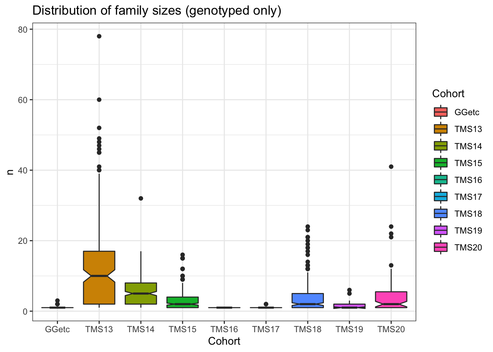

Last updated: 2021-08-11
Checks: 7 0
Knit directory: IITA_2021GS/
This reproducible R Markdown analysis was created with workflowr (version 1.6.2). The Checks tab describes the reproducibility checks that were applied when the results were created. The Past versions tab lists the development history.
Great! Since the R Markdown file has been committed to the Git repository, you know the exact version of the code that produced these results.
Great job! The global environment was empty. Objects defined in the global environment can affect the analysis in your R Markdown file in unknown ways. For reproduciblity it’s best to always run the code in an empty environment.
The command set.seed(20210504) was run prior to running the code in the R Markdown file. Setting a seed ensures that any results that rely on randomness, e.g. subsampling or permutations, are reproducible.
Great job! Recording the operating system, R version, and package versions is critical for reproducibility.
Nice! There were no cached chunks for this analysis, so you can be confident that you successfully produced the results during this run.
Great job! Using relative paths to the files within your workflowr project makes it easier to run your code on other machines.
Great! You are using Git for version control. Tracking code development and connecting the code version to the results is critical for reproducibility.
The results in this page were generated with repository version e4df79f. See the Past versions tab to see a history of the changes made to the R Markdown and HTML files.
Note that you need to be careful to ensure that all relevant files for the analysis have been committed to Git prior to generating the results (you can use wflow_publish or wflow_git_commit). workflowr only checks the R Markdown file, but you know if there are other scripts or data files that it depends on. Below is the status of the Git repository when the results were generated:
Ignored files:
Ignored: .DS_Store
Ignored: .Rhistory
Ignored: .Rproj.user/
Ignored: analysis/.DS_Store
Ignored: code/.DS_Store
Ignored: data/.DS_Store
Ignored: output/.DS_Store
Untracked files:
Untracked: IITA_2021GS.Rproj
Untracked: data/Accessions_IITA_LikelyInField_IbaIknMokUbj_2020to2021.txt
Untracked: data/DatabaseDownload_2021Aug08/
Untracked: data/DatabaseDownload_2021May04/
Untracked: data/GBSdataMasterList_31818.csv
Untracked: data/IITA_GBStoPhenoMaster_33018.csv
Untracked: data/NRCRI_GBStoPhenoMaster_40318.csv
Untracked: data/PedigreeGeneticGainCycleTime_aafolabi_01122020.xls
Untracked: data/Report-DCas21-6038/
Untracked: data/accessions_possibly_infield_2021Aug10.rds
Untracked: data/blups_forGP.rds
Untracked: data/chr1_RefPanelAndGSprogeny_ReadyForGP_72719.fam
Untracked: data/dosages_IITA_2021Aug09.rds
Untracked: data/haps_IITA_2021Aug09.rds
Untracked: data/recombFreqMat_1minus2c_2021Aug02.qs
Untracked: data/snpsets.rds
Untracked: output/AllChrom_RefPanelAndGSprogeny_ReadyForGP_2021Aug08.bed
Untracked: output/AllChrom_RefPanelAndGSprogeny_ReadyForGP_2021Aug08.bim
Untracked: output/AllChrom_RefPanelAndGSprogeny_ReadyForGP_2021Aug08.fam
Untracked: output/AllChrom_RefPanelAndGSprogeny_ReadyForGP_2021Aug08.hap.gz
Untracked: output/AllChrom_RefPanelAndGSprogeny_ReadyForGP_2021Aug08.log
Untracked: output/AllChrom_RefPanelAndGSprogeny_ReadyForGP_2021Aug08.nosex
Untracked: output/AllChrom_RefPanelAndGSprogeny_ReadyForGP_2021Aug08.sample
Untracked: output/AllChrom_RefPanelAndGSprogeny_ReadyForGP_2021Aug08.vcf.gz
Untracked: output/BeagleLogs/
Untracked: output/CrossesToPredict_2021Aug10.rds
Untracked: output/IITA_CleanedTrialData_2021Aug08.rds
Untracked: output/IITA_ExptDesignsDetected_2021Aug08.rds
Untracked: output/IITA_blupsForModelTraining_twostage_asreml_2021Aug09.rds
Untracked: output/IITA_trials_NOT_identifiable.csv
Untracked: output/chr10_DCas21_6038_WA_REFimputed.INFO
Untracked: output/chr10_DCas21_6038_WA_REFimputed.hwe
Untracked: output/chr10_DCas21_6038_WA_REFimputed.log
Untracked: output/chr10_DCas21_6038_WA_REFimputed.sitesPassing
Untracked: output/chr10_DCas21_6038_WA_REFimputed.vcf.gz
Untracked: output/chr10_DCas21_6038_WA_REFimputedAndFiltered.vcf.gz
Untracked: output/chr10_RefPanelAndGSprogeny72719_SubsetAndReadyToMerge.vcf.gz.vcf.gz
Untracked: output/chr10_RefPanelAndGSprogeny_ReadyForGP_2021Aug08.vcf.gz
Untracked: output/chr10_RefPanelAndGSprogeny_ReadyForGP_2021Aug08.vcf.gz.tbi
Untracked: output/chr11_DCas21_6038_WA_REFimputed.INFO
Untracked: output/chr11_DCas21_6038_WA_REFimputed.hwe
Untracked: output/chr11_DCas21_6038_WA_REFimputed.log
Untracked: output/chr11_DCas21_6038_WA_REFimputed.sitesPassing
Untracked: output/chr11_DCas21_6038_WA_REFimputed.vcf.gz
Untracked: output/chr11_DCas21_6038_WA_REFimputedAndFiltered.vcf.gz
Untracked: output/chr11_RefPanelAndGSprogeny72719_SubsetAndReadyToMerge.vcf.gz.vcf.gz
Untracked: output/chr11_RefPanelAndGSprogeny_ReadyForGP_2021Aug08.vcf.gz
Untracked: output/chr11_RefPanelAndGSprogeny_ReadyForGP_2021Aug08.vcf.gz.tbi
Untracked: output/chr12_DCas21_6038_WA_REFimputed.INFO
Untracked: output/chr12_DCas21_6038_WA_REFimputed.hwe
Untracked: output/chr12_DCas21_6038_WA_REFimputed.log
Untracked: output/chr12_DCas21_6038_WA_REFimputed.sitesPassing
Untracked: output/chr12_DCas21_6038_WA_REFimputed.vcf.gz
Untracked: output/chr12_DCas21_6038_WA_REFimputedAndFiltered.vcf.gz
Untracked: output/chr12_RefPanelAndGSprogeny72719_SubsetAndReadyToMerge.vcf.gz.vcf.gz
Untracked: output/chr12_RefPanelAndGSprogeny_ReadyForGP_2021Aug08.vcf.gz
Untracked: output/chr12_RefPanelAndGSprogeny_ReadyForGP_2021Aug08.vcf.gz.tbi
Untracked: output/chr13_DCas21_6038_WA_REFimputed.INFO
Untracked: output/chr13_DCas21_6038_WA_REFimputed.hwe
Untracked: output/chr13_DCas21_6038_WA_REFimputed.log
Untracked: output/chr13_DCas21_6038_WA_REFimputed.sitesPassing
Untracked: output/chr13_DCas21_6038_WA_REFimputed.vcf.gz
Untracked: output/chr13_DCas21_6038_WA_REFimputedAndFiltered.vcf.gz
Untracked: output/chr13_RefPanelAndGSprogeny72719_SubsetAndReadyToMerge.vcf.gz.vcf.gz
Untracked: output/chr13_RefPanelAndGSprogeny_ReadyForGP_2021Aug08.vcf.gz
Untracked: output/chr13_RefPanelAndGSprogeny_ReadyForGP_2021Aug08.vcf.gz.tbi
Untracked: output/chr14_DCas21_6038_WA_REFimputed.INFO
Untracked: output/chr14_DCas21_6038_WA_REFimputed.hwe
Untracked: output/chr14_DCas21_6038_WA_REFimputed.log
Untracked: output/chr14_DCas21_6038_WA_REFimputed.sitesPassing
Untracked: output/chr14_DCas21_6038_WA_REFimputed.vcf.gz
Untracked: output/chr14_DCas21_6038_WA_REFimputedAndFiltered.vcf.gz
Untracked: output/chr14_RefPanelAndGSprogeny72719_SubsetAndReadyToMerge.vcf.gz.vcf.gz
Untracked: output/chr14_RefPanelAndGSprogeny_ReadyForGP_2021Aug08.vcf.gz
Untracked: output/chr14_RefPanelAndGSprogeny_ReadyForGP_2021Aug08.vcf.gz.tbi
Untracked: output/chr15_DCas21_6038_WA_REFimputed.INFO
Untracked: output/chr15_DCas21_6038_WA_REFimputed.hwe
Untracked: output/chr15_DCas21_6038_WA_REFimputed.log
Untracked: output/chr15_DCas21_6038_WA_REFimputed.sitesPassing
Untracked: output/chr15_DCas21_6038_WA_REFimputed.vcf.gz
Untracked: output/chr15_DCas21_6038_WA_REFimputedAndFiltered.vcf.gz
Untracked: output/chr15_RefPanelAndGSprogeny72719_SubsetAndReadyToMerge.vcf.gz.vcf.gz
Untracked: output/chr15_RefPanelAndGSprogeny_ReadyForGP_2021Aug08.vcf.gz
Untracked: output/chr15_RefPanelAndGSprogeny_ReadyForGP_2021Aug08.vcf.gz.tbi
Untracked: output/chr16_DCas21_6038_WA_REFimputed.INFO
Untracked: output/chr16_DCas21_6038_WA_REFimputed.hwe
Untracked: output/chr16_DCas21_6038_WA_REFimputed.log
Untracked: output/chr16_DCas21_6038_WA_REFimputed.sitesPassing
Untracked: output/chr16_DCas21_6038_WA_REFimputed.vcf.gz
Untracked: output/chr16_DCas21_6038_WA_REFimputedAndFiltered.vcf.gz
Untracked: output/chr16_RefPanelAndGSprogeny72719_SubsetAndReadyToMerge.vcf.gz.vcf.gz
Untracked: output/chr16_RefPanelAndGSprogeny_ReadyForGP_2021Aug08.vcf.gz
Untracked: output/chr16_RefPanelAndGSprogeny_ReadyForGP_2021Aug08.vcf.gz.tbi
Untracked: output/chr17_DCas21_6038_WA_REFimputed.INFO
Untracked: output/chr17_DCas21_6038_WA_REFimputed.hwe
Untracked: output/chr17_DCas21_6038_WA_REFimputed.log
Untracked: output/chr17_DCas21_6038_WA_REFimputed.sitesPassing
Untracked: output/chr17_DCas21_6038_WA_REFimputed.vcf.gz
Untracked: output/chr17_DCas21_6038_WA_REFimputedAndFiltered.vcf.gz
Untracked: output/chr17_RefPanelAndGSprogeny72719_SubsetAndReadyToMerge.vcf.gz.vcf.gz
Untracked: output/chr17_RefPanelAndGSprogeny_ReadyForGP_2021Aug08.vcf.gz
Untracked: output/chr17_RefPanelAndGSprogeny_ReadyForGP_2021Aug08.vcf.gz.tbi
Untracked: output/chr18_DCas21_6038_WA_REFimputed.INFO
Untracked: output/chr18_DCas21_6038_WA_REFimputed.hwe
Untracked: output/chr18_DCas21_6038_WA_REFimputed.log
Untracked: output/chr18_DCas21_6038_WA_REFimputed.sitesPassing
Untracked: output/chr18_DCas21_6038_WA_REFimputed.vcf.gz
Untracked: output/chr18_DCas21_6038_WA_REFimputedAndFiltered.vcf.gz
Untracked: output/chr18_RefPanelAndGSprogeny72719_SubsetAndReadyToMerge.vcf.gz.vcf.gz
Untracked: output/chr18_RefPanelAndGSprogeny_ReadyForGP_2021Aug08.vcf.gz
Untracked: output/chr18_RefPanelAndGSprogeny_ReadyForGP_2021Aug08.vcf.gz.tbi
Untracked: output/chr1_DCas21_6038_WA_REFimputed.INFO
Untracked: output/chr1_DCas21_6038_WA_REFimputed.hwe
Untracked: output/chr1_DCas21_6038_WA_REFimputed.log
Untracked: output/chr1_DCas21_6038_WA_REFimputed.sitesPassing
Untracked: output/chr1_DCas21_6038_WA_REFimputed.vcf.gz
Untracked: output/chr1_DCas21_6038_WA_REFimputedAndFiltered.vcf.gz
Untracked: output/chr1_RefPanelAndGSprogeny72719_SubsetAndReadyToMerge.vcf.gz.vcf.gz
Untracked: output/chr1_RefPanelAndGSprogeny_ReadyForGP_2021Aug08.vcf.gz
Untracked: output/chr1_RefPanelAndGSprogeny_ReadyForGP_2021Aug08.vcf.gz.tbi
Untracked: output/chr2_DCas21_6038_WA_REFimputed.INFO
Untracked: output/chr2_DCas21_6038_WA_REFimputed.hwe
Untracked: output/chr2_DCas21_6038_WA_REFimputed.log
Untracked: output/chr2_DCas21_6038_WA_REFimputed.sitesPassing
Untracked: output/chr2_DCas21_6038_WA_REFimputed.vcf.gz
Untracked: output/chr2_DCas21_6038_WA_REFimputedAndFiltered.vcf.gz
Untracked: output/chr2_RefPanelAndGSprogeny72719_SubsetAndReadyToMerge.vcf.gz.vcf.gz
Untracked: output/chr2_RefPanelAndGSprogeny_ReadyForGP_2021Aug08.vcf.gz
Untracked: output/chr2_RefPanelAndGSprogeny_ReadyForGP_2021Aug08.vcf.gz.tbi
Untracked: output/chr3_DCas21_6038_WA_REFimputed.INFO
Untracked: output/chr3_DCas21_6038_WA_REFimputed.hwe
Untracked: output/chr3_DCas21_6038_WA_REFimputed.log
Untracked: output/chr3_DCas21_6038_WA_REFimputed.sitesPassing
Untracked: output/chr3_DCas21_6038_WA_REFimputed.vcf.gz
Untracked: output/chr3_DCas21_6038_WA_REFimputedAndFiltered.vcf.gz
Untracked: output/chr3_RefPanelAndGSprogeny72719_SubsetAndReadyToMerge.vcf.gz.vcf.gz
Untracked: output/chr3_RefPanelAndGSprogeny_ReadyForGP_2021Aug08.vcf.gz
Untracked: output/chr3_RefPanelAndGSprogeny_ReadyForGP_2021Aug08.vcf.gz.tbi
Untracked: output/chr4_DCas21_6038_WA_REFimputed.INFO
Untracked: output/chr4_DCas21_6038_WA_REFimputed.hwe
Untracked: output/chr4_DCas21_6038_WA_REFimputed.log
Untracked: output/chr4_DCas21_6038_WA_REFimputed.sitesPassing
Untracked: output/chr4_DCas21_6038_WA_REFimputed.vcf.gz
Untracked: output/chr4_DCas21_6038_WA_REFimputedAndFiltered.vcf.gz
Untracked: output/chr4_RefPanelAndGSprogeny72719_SubsetAndReadyToMerge.vcf.gz.vcf.gz
Untracked: output/chr4_RefPanelAndGSprogeny_ReadyForGP_2021Aug08.vcf.gz
Untracked: output/chr4_RefPanelAndGSprogeny_ReadyForGP_2021Aug08.vcf.gz.tbi
Untracked: output/chr5_DCas21_6038_WA_REFimputed.INFO
Untracked: output/chr5_DCas21_6038_WA_REFimputed.hwe
Untracked: output/chr5_DCas21_6038_WA_REFimputed.log
Untracked: output/chr5_DCas21_6038_WA_REFimputed.sitesPassing
Untracked: output/chr5_DCas21_6038_WA_REFimputed.vcf.gz
Untracked: output/chr5_DCas21_6038_WA_REFimputedAndFiltered.vcf.gz
Untracked: output/chr5_RefPanelAndGSprogeny72719_SubsetAndReadyToMerge.vcf.gz.vcf.gz
Untracked: output/chr5_RefPanelAndGSprogeny_ReadyForGP_2021Aug08.vcf.gz
Untracked: output/chr5_RefPanelAndGSprogeny_ReadyForGP_2021Aug08.vcf.gz.tbi
Untracked: output/chr6_DCas21_6038_WA_REFimputed.INFO
Untracked: output/chr6_DCas21_6038_WA_REFimputed.hwe
Untracked: output/chr6_DCas21_6038_WA_REFimputed.log
Untracked: output/chr6_DCas21_6038_WA_REFimputed.sitesPassing
Untracked: output/chr6_DCas21_6038_WA_REFimputed.vcf.gz
Untracked: output/chr6_DCas21_6038_WA_REFimputedAndFiltered.vcf.gz
Untracked: output/chr6_RefPanelAndGSprogeny72719_SubsetAndReadyToMerge.vcf.gz.vcf.gz
Untracked: output/chr6_RefPanelAndGSprogeny_ReadyForGP_2021Aug08.vcf.gz
Untracked: output/chr6_RefPanelAndGSprogeny_ReadyForGP_2021Aug08.vcf.gz.tbi
Untracked: output/chr7_DCas21_6038_WA_REFimputed.INFO
Untracked: output/chr7_DCas21_6038_WA_REFimputed.hwe
Untracked: output/chr7_DCas21_6038_WA_REFimputed.log
Untracked: output/chr7_DCas21_6038_WA_REFimputed.sitesPassing
Untracked: output/chr7_DCas21_6038_WA_REFimputed.vcf.gz
Untracked: output/chr7_DCas21_6038_WA_REFimputedAndFiltered.vcf.gz
Untracked: output/chr7_RefPanelAndGSprogeny72719_SubsetAndReadyToMerge.vcf.gz.vcf.gz
Untracked: output/chr7_RefPanelAndGSprogeny_ReadyForGP_2021Aug08.vcf.gz
Untracked: output/chr7_RefPanelAndGSprogeny_ReadyForGP_2021Aug08.vcf.gz.tbi
Untracked: output/chr8_DCas21_6038_WA_REFimputed.INFO
Untracked: output/chr8_DCas21_6038_WA_REFimputed.hwe
Untracked: output/chr8_DCas21_6038_WA_REFimputed.log
Untracked: output/chr8_DCas21_6038_WA_REFimputed.sitesPassing
Untracked: output/chr8_DCas21_6038_WA_REFimputed.vcf.gz
Untracked: output/chr8_DCas21_6038_WA_REFimputedAndFiltered.vcf.gz
Untracked: output/chr8_RefPanelAndGSprogeny72719_SubsetAndReadyToMerge.vcf.gz.vcf.gz
Untracked: output/chr8_RefPanelAndGSprogeny_ReadyForGP_2021Aug08.vcf.gz
Untracked: output/chr8_RefPanelAndGSprogeny_ReadyForGP_2021Aug08.vcf.gz.tbi
Untracked: output/chr9_DCas21_6038_WA_REFimputed.INFO
Untracked: output/chr9_DCas21_6038_WA_REFimputed.hwe
Untracked: output/chr9_DCas21_6038_WA_REFimputed.log
Untracked: output/chr9_DCas21_6038_WA_REFimputed.sitesPassing
Untracked: output/chr9_DCas21_6038_WA_REFimputed.vcf.gz
Untracked: output/chr9_DCas21_6038_WA_REFimputedAndFiltered.vcf.gz
Untracked: output/chr9_RefPanelAndGSprogeny72719_SubsetAndReadyToMerge.vcf.gz.vcf.gz
Untracked: output/chr9_RefPanelAndGSprogeny_ReadyForGP_2021Aug08.vcf.gz
Untracked: output/chr9_RefPanelAndGSprogeny_ReadyForGP_2021Aug08.vcf.gz.tbi
Untracked: output/genomicMatePredictions_full_set_2021Aug10.rds
Untracked: output/genomicPredictions_full_set_2021Aug09.csv
Untracked: output/genomicPredictions_full_set_2021Aug09.rds
Untracked: output/genomicPredictions_medium_set_2021Aug09.rds
Untracked: output/genomicPredictions_reduced_set_2021Aug09.rds
Untracked: output/kinship_A_IITA_2021Aug09.rds
Untracked: output/kinship_A_MediumSNPset_IITA_2021Aug09.rds
Untracked: output/kinship_A_ReducedSNPset_IITA_2021Aug09.rds
Untracked: output/kinship_Dgeno_IITA_2021Aug09.rds
Untracked: output/kinship_Dgeno_MediumSNPset_IITA_2021Aug09.rds
Untracked: output/kinship_Dgeno_ReducedSNPset_IITA_2021Aug09.rds
Untracked: output/maxNOHAV_byStudy.csv
Untracked: output/parentWiseCV_medium_set_CrossPredAccuracy.rds
Untracked: output/parentWiseCV_reduced_set_CrossPredAccuracy.rds
Untracked: output/parentsToPredictCrosses_2021Aug10.rds
Untracked: output/ped2check_genome.rds
Untracked: output/ped2genos.txt
Untracked: output/pednames2keep.txt
Untracked: output/pednames_Prune100_25_pt25.log
Untracked: output/pednames_Prune100_25_pt25.nosex
Untracked: output/pednames_Prune100_25_pt25.prune.in
Untracked: output/pednames_Prune100_25_pt25.prune.out
Untracked: output/samples2keep_IITA_2021Aug09.txt
Untracked: output/samples2keep_IITA_MAFpt01_prune1Mb_50kb_pt6.log
Untracked: output/samples2keep_IITA_MAFpt01_prune1Mb_50kb_pt6.nosex
Untracked: output/samples2keep_IITA_MAFpt01_prune1Mb_50kb_pt6.prune.in
Untracked: output/samples2keep_IITA_MAFpt01_prune1Mb_50kb_pt6.prune.out
Untracked: output/samples2keep_IITA_MAFpt01_prune1Mb_50kb_pt8.log
Untracked: output/samples2keep_IITA_MAFpt01_prune1Mb_50kb_pt8.nosex
Untracked: output/samples2keep_IITA_MAFpt01_prune1Mb_50kb_pt8.prune.in
Untracked: output/samples2keep_IITA_MAFpt01_prune1Mb_50kb_pt8.prune.out
Untracked: output/samples2keep_IITA_MAFpt01_prune50_25_pt98.log
Untracked: output/samples2keep_IITA_MAFpt01_prune50_25_pt98.nosex
Untracked: output/samples2keep_IITA_MAFpt01_prune50_25_pt98.prune.in
Untracked: output/samples2keep_IITA_MAFpt01_prune50_25_pt98.prune.out
Untracked: output/standardCV_full_set_ClonePredAccuracy.rds
Untracked: output/standardCV_medium_set_ClonePredAccuracy.rds
Untracked: output/standardCV_reduced_set_ClonePredAccuracy.rds
Untracked: output/verified_ped.txt
Unstaged changes:
Modified: analysis/07-Results.Rmd
Deleted: analysis/inputsForSimulation.Rmd
Deleted: code/README.md
Deleted: code/gmsFunctions.R
Deleted: code/gsFunctions.R
Deleted: code/parentWiseCrossVal.R
Deleted: code/predCrossVar.R
Deleted: implementGMSinCassava.Rproj
Deleted: output/README.md
Deleted: output/cvAD_5rep5fold_predAccuracy.rds
Deleted: output/cvDirDom_5rep5fold_predAccuracy.rds
Deleted: output/estimateSelectionError.rds
Note that any generated files, e.g. HTML, png, CSS, etc., are not included in this status report because it is ok for generated content to have uncommitted changes.
These are the previous versions of the repository in which changes were made to the R Markdown (analysis/03-validatePedigree.Rmd) and HTML (docs/03-validatePedigree.html) files. If you’ve configured a remote Git repository (see ?wflow_git_remote), click on the hyperlinks in the table below to view the files as they were in that past version.
| File | Version | Author | Date | Message |
|---|---|---|---|---|
| Rmd | e4df79f | wolfemd | 2021-08-11 | Completed IITA_2021GS pipeline including imputation and genomic prediction. Last bit of cross-validation and cross-prediction finishes in 24 hrs. |
| html | 934141c | wolfemd | 2021-07-14 | Build site. |
| html | e66bdad | wolfemd | 2021-06-10 | Build site. |
| Rmd | a8452ba | wolfemd | 2021-06-10 | Initial build of the entire page upon completion of all |
Read the pedigree I downloaded for IITA
library(tidyverse); library(magrittr)
ped<-read_delim(here::here("data/DatabaseDownload_2021May04","pedigree.txt"),
delim = "\t")
ped_tms20<-readxl::read_xlsx(here::here("data/DatabaseDownload_2021Aug08","Pedigree.xlsx"))
ped %<>%
select(-Cross_Type) %>%
bind_rows(ped_tms20 %>%
select(Accession_name,Pedigree) %>%
rename(Accession=Accession_name) %>%
separate(Pedigree,c("Female_Parent","Male_Parent"),"/"))
#rm(ped_tms20)Filter: Keep only complete pedigree records.
ped %<>%
filter(!is.na(Female_Parent),
!is.na(Male_Parent),
Female_Parent!="?",
Male_Parent!="?") %>%
distinctNumber of full-sib families?
ped %>% distinct(Female_Parent,Male_Parent) %>% nrow()[1] 1826Summarize distribution of full-sib family sizes
ped %>%
count(Female_Parent,Male_Parent) %>% arrange(desc(n)) %>% summary(.$n) Female_Parent Male_Parent n
Length:1826 Length:1826 Min. : 1.000
Class :character Class :character 1st Qu.: 1.000
Mode :character Mode :character Median : 2.000
Mean : 5.059
3rd Qu.: 6.000
Max. :276.000 ped %>% head# A tibble: 6 × 3
Accession Female_Parent Male_Parent
<chr> <chr> <chr>
1 TMS13F1002P0001 IITA-TMS-IBA930265 IITA-TMS-MOK980068
2 TMS13F1002P0002 IITA-TMS-IBA930265 IITA-TMS-MOK980068
3 TMS13F1002P0003 IITA-TMS-IBA930265 IITA-TMS-MOK980068
4 TMS13F1002P0004 IITA-TMS-IBA930265 IITA-TMS-MOK980068
5 TMS13F1002P0005 IITA-TMS-IBA930265 IITA-TMS-MOK980068
6 TMS13F1002P0006 IITA-TMS-IBA930265 IITA-TMS-MOK980068Goal is to identify DNA samples names for listed accessions and parents in the pedigree. Important to choose same samples used in genomic predictions where possible, esp. phenotyped training clones.
However, there may be non-phenotyped clones that are genotyped genomic selection progeny, which I still want in my analysis.
First with the union of the parent and accession IDs in the pedigree.
pednames<-union(ped$Accession,union(ped$Female_Parent,ped$Male_Parent)) %>%
tibble(germplasmName=.)
pednames$germplasmName %>% length # number of names in ped[1] 9568Add a “Cohort” variable corresponding to the genetic groups or cycles in the germplasm.
pednames %<>%
mutate(Cohort=NA,
Cohort=ifelse(grepl("TMS20",germplasmName,ignore.case = T),"TMS20",
ifelse(grepl("TMS19",germplasmName,ignore.case = T),"TMS19",
ifelse(grepl("TMS18",germplasmName,ignore.case = T),"TMS18",
ifelse(grepl("TMS17",germplasmName,ignore.case = T),"TMS17",
ifelse(grepl("TMS16",germplasmName,ignore.case = T),"TMS16",
ifelse(grepl("TMS15",germplasmName,ignore.case = T),"TMS15",
ifelse(grepl("TMS14",germplasmName,ignore.case = T),"TMS14",
ifelse(grepl("TMS13|2013_",germplasmName,ignore.case = T),"TMS13","GGetc")))))))))
pednames %>%
count(Cohort)# A tibble: 9 × 2
Cohort n
<chr> <int>
1 GGetc 400
2 TMS13 2629
3 TMS14 1981
4 TMS15 1240
5 TMS16 6
6 TMS17 70
7 TMS18 2394
8 TMS19 178
9 TMS20 670The names in the pedigree downloaded from cassavabase should match the names in the germplasmName variable in the plot-basis pheno data, also downloaded from cassavabase. From that plot-basis data, make a data.frame of the unique germplasmName-to-FullSampleName matches, where FullSampleName is the column with names matching VCF files / DNA samples.
dbdata<-readRDS(here::here("output","IITA_ExptDesignsDetected_2021Aug08.rds"))
phenos2genos<-dbdata %>%
distinct(GID,germplasmName,FullSampleName) %>%
filter(!is.na(FullSampleName))
phenos2genos %>% head# A tibble: 6 × 3
germplasmName FullSampleName GID
<chr> <chr> <chr>
1 IITA-TMS-IBA30572 I30572:250253643 I30572:250253643
2 IITA-TMS-IBA30572 IITA-TMS-IBA30572_A35468 IITA-TMS-IBA30572_A35468
3 IITA-TMS-IBA30572 IITA-TMS-IBA30572_A35591 IITA-TMS-IBA30572_A35591
4 IITA-TMS-IBA30572 IITA-TMS-IBA30572_A35546 IITA-TMS-IBA30572_A35546
5 IITA-TMS-IBA30572 IITA-TMS-IBA30572_A35594 IITA-TMS-IBA30572_A35594
6 IITA-TMS-IBA30572 IITA-TMS-IBA30572_A35750 IITA-TMS-IBA30572_A35750How many from each cohort in the pednames match a germplasmName with a FullSampleName in the plot-basis trial data?
pednames %>%
inner_join(phenos2genos) %>%
count(Cohort)# A tibble: 9 × 2
Cohort n
<chr> <int>
1 GGetc 302
2 TMS13 2467
3 TMS14 1536
4 TMS15 867
5 TMS16 1
6 TMS17 36
7 TMS18 1400
8 TMS19 178
9 TMS20 674I want haplotypes of genotyped progeny in the pedigree even if they aren’t phenotyped.
The *.fam file for the RefPanelAndGSprogeny VCF I will ultimately use to extract haplotypes and do predictions with is already in the data/ directory because it’s used in the standard match-genos-to-phenos step.
gids_in_fam<-read.table(here::here("data",
"chr1_RefPanelAndGSprogeny_ReadyForGP_72719.fam"),
stringsAsFactors = F, header = F)$V2
length(gids_in_fam)[1] 21856Split the names based on a “:” for the GBS samples, and “_A” seems to work (for IITA) to split the DArT sample ID from the germplasmName for DArTseqLD samples. The suffix / ID added to DNA sample names at DARt seems to vary depending on what gets submitted to them. GBS-era samples (almost) 100% had the “:” separator.
gids_in_fam %<>%
tibble(FullSampleName=.) %>%
separate(FullSampleName,c("germplasmName","DNA_ID"),":|_A",remove = F) %>%
select(-DNA_ID)
gids_in_fam %>%
filter(grepl("TMS18",FullSampleName)) %>% nrow()[1] 2420There are also TMS20 in the latest DArT report and the DB sourced ped contains matches to the DARt sample names.
gids_in_fam<-gids_in_fam %>%
bind_rows(ped_tms20 %>%
select(Accession_name,Lab_ID) %>%
rename(germplasmName=Accession_name,
FullSampleName=Lab_ID) %>%
mutate(FullSampleName=gsub("\\.","_",FullSampleName)))
gids_in_fam %>% head# A tibble: 6 × 2
FullSampleName germplasmName
<chr> <chr>
1 TMS15F1142P0004:250465388 TMS15F1142P0004
2 TMS15F1021P0003:250464911 TMS15F1021P0003
3 TMS15F1276P0003:250465968 TMS15F1276P0003
4 TMS15F1282P0001:250466007 TMS15F1282P0001
5 TMS15F1035P0002:250465011 TMS15F1035P0002
6 TMS15F1179P0024:250465452 TMS15F1179P0024gids_in_fam %>%
filter(grepl("TMS16|TMS17|TMS18|TMS19|TMS20",FullSampleName)) %>% nrow()[1] 3713There are 3713 “TMS16” though “TMS20” clones genotyped.
pednames2genos<-pednames %>%
inner_join(phenos2genos) %>%
bind_rows(pednames %>%
anti_join(phenos2genos) %>%
inner_join(gids_in_fam))
pednames2genos %>% count(Cohort) # A tibble: 9 × 2
Cohort n
<chr> <int>
1 GGetc 304
2 TMS13 2469
3 TMS14 1538
4 TMS15 901
5 TMS16 1
6 TMS17 36
7 TMS18 1400
8 TMS19 178
9 TMS20 674Are there germplasmName in the pednames2genos match table with multiple DNA samples?
pednames2genos %>% count(germplasmName) %>% arrange(desc(n))# A tibble: 7,185 × 2
germplasmName n
<chr> <int>
1 IITA-TMS-IBA000070 17
2 TMEB419 16
3 TMS13F1160P0004 16
4 IITA-TMS-IBA30572 15
5 IITA-TMS-IBA980581 14
6 TMS13F1053P0010 10
7 IITA-TMS-IBA982101 9
8 TMS13F1343P0022 8
9 IITA-TMS-IBA070593 7
10 TMEB693 6
# … with 7,175 more rowsOf course there are. Will need to pick.
Which pednames have BLUPs?
blups<-readRDS(file=here::here("output","IITA_blupsForModelTraining_twostage_asreml_2021Aug09.rds"))
blups %>%
select(Trait,blups) %>%
unnest(blups) %>%
distinct(GID) %$% GID -> gidWithBLUPs
pednames %>%
inner_join(phenos2genos) %>%
filter(FullSampleName %in% gidWithBLUPs) %>%
count(Cohort)# A tibble: 7 × 2
Cohort n
<chr> <int>
1 GGetc 302
2 TMS13 2447
3 TMS14 1536
4 TMS15 845
5 TMS17 36
6 TMS18 1399
7 TMS19 178# if there are any blups for a germplasmName
# keep only the FullSampleName/GID associated
# else keep all
pednames2genos %<>%
mutate(HasBLUPs=ifelse(GID %in% gidWithBLUPs,T,F)) %>%
nest(DNAsamples=-c(germplasmName,Cohort)) %>%
mutate(AnyBLUPs=map_lgl(DNAsamples,~any(.$HasBLUPs)),
DNAsamples=ifelse(AnyBLUPs==T,
map(DNAsamples,~filter(.,HasBLUPs==TRUE)),
DNAsamples)) %>%
select(-AnyBLUPs) %>%
unnest(DNAsamples)
# Among all remaining
# Select only one GID to use for each germplasmName
pednames2genos %<>%
group_by(germplasmName) %>%
slice(1) %>%
ungroup()
pednames2genos %>%
count(Cohort)# A tibble: 9 × 2
Cohort n
<chr> <int>
1 GGetc 200
2 TMS13 2425
3 TMS14 1519
4 TMS15 894
5 TMS16 1
6 TMS17 36
7 TMS18 1262
8 TMS19 178
9 TMS20 670Now make a pedigree with both Accession and parent names matching the genos (FullSampleName) rather than phenos (germplasmName).
ped2genos<-ped %>%
rename(germplasmName=Accession) %>%
inner_join(pednames2genos %>%
select(-GID,-HasBLUPs)) %>%
left_join(pednames2genos %>%
select(-GID,-Cohort,-HasBLUPs) %>%
rename(Female_Parent=germplasmName,
DamID=FullSampleName)) %>%
left_join(pednames2genos %>%
select(-GID,-Cohort,-HasBLUPs) %>%
rename(Male_Parent=germplasmName,
SireID=FullSampleName))
ped2genos %<>%
filter(!is.na(FullSampleName),
!is.na(DamID),
!is.na(SireID))
ped2genos %>% distinct# %>% filter(grepl("TMS20",germplasmName))# A tibble: 6,257 × 7
germplasmName Female_Parent Male_Parent Cohort FullSampleName DamID SireID
<chr> <chr> <chr> <chr> <chr> <chr> <chr>
1 TMS13F1002P00… IITA-TMS-IBA9… IITA-TMS-MO… TMS13 2013_0002_1:2… I930… M9800…
2 TMS13F1002P00… IITA-TMS-IBA9… IITA-TMS-MO… TMS13 2013_0002_2:2… I930… M9800…
3 TMS13F1002P00… IITA-TMS-IBA9… IITA-TMS-MO… TMS13 2013_0002_3:2… I930… M9800…
4 TMS13F1002P00… IITA-TMS-IBA9… IITA-TMS-MO… TMS13 2013_0002_4:2… I930… M9800…
5 TMS13F1002P00… IITA-TMS-IBA9… IITA-TMS-MO… TMS13 2013_0002_5:2… I930… M9800…
6 TMS13F1002P00… IITA-TMS-IBA9… IITA-TMS-MO… TMS13 2013_0002_6:2… I930… M9800…
7 TMS13F1002P00… IITA-TMS-IBA9… IITA-TMS-MO… TMS13 2013_0002_7:2… I930… M9800…
8 TMS13F1002P00… IITA-TMS-IBA9… IITA-TMS-MO… TMS13 2013_0002_8:2… I930… M9800…
9 TMS13F1002P00… IITA-TMS-IBA9… IITA-TMS-MO… TMS13 2013_0002_9:2… I930… M9800…
10 TMS13F1002P00… IITA-TMS-IBA9… IITA-TMS-MO… TMS13 2013_0002_10:… I930… M9800…
# … with 6,247 more rowsIn the end, considering only pedigree entries where the entire trio (offspring + both parents) are genotyped, the pedigree has 6257 entries to check.
ped2genos %>% count(Cohort,DamID,SireID) %>%
ggplot(.,aes(x=Cohort,y=n,fill=Cohort)) +
geom_boxplot(notch = T) + theme_bw() +
ggtitle("Distribution of family sizes (genotyped only)")
ped2genos %>%
count(Cohort,DamID,SireID) %$% summary(n) Min. 1st Qu. Median Mean 3rd Qu. Max.
1.000 1.000 3.000 5.298 7.000 78.000 Number of families with at least 10 genotyped members, by cohort:
ped2genos %>%
count(Cohort,DamID,SireID) %>%
filter(n>=10) %>%
count(Cohort)# A tibble: 5 × 2
Cohort n
<chr> <int>
1 TMS13 95
2 TMS14 55
3 TMS15 11
4 TMS18 27
5 TMS20 8ped2genos %>%
select(FullSampleName,DamID,SireID) %>%
write.table(.,file=here::here("output","ped2genos.txt"),row.names=F, col.names=F, quote=F)Alternative to the below: Could compute everything manually based on mendelian rules. Kinship coefficients directly from the relationship matrix used for prediction would also be useful, for example, the estimated inbreeding coefficient of an individual is 1/2 the relationship of its parents.
PLINK1.9 pipeline to use:
AllChrom_RefPanelAndGSprogeny_ReadyForGP_2021Aug08) to only lines in the pedigree.--indep-pairwise 100 25 0.25 stringent, but somewhat arbitrary--genomeDetermine parent-offspring relationship status based on plink IBD:
should have a kinship \(\hat{\pi} \approx 0.5\).
Three standard IBD probabilities are defined for each pair; the probability of sharing zero (Z0), one (Z1) or two (Z2) alleles at a randomly chosen locus IBD.
The expectation for siblings in terms of these probabilities is Z0=0.25, Z1=0.5 and Z2=0.25.
The expectation for parent-offspring pairs is Z0=0, Z1=1 and Z2=0.
Based on work I did in 2016 (never published), declare a parent-offspring pair where: Z0<0.313 and Z1>0.668.
ped2check<-read.table(file=here::here("output","ped2genos.txt"),
header = F, stringsAsFactors = F)
pednames<-union(ped2check$V1,union(ped2check$V2,ped2check$V3)) %>%
tibble(FID=0,IID=.)
write.table(pednames,file=here::here("output","pednames2keep.txt"),
row.names = F, col.names = F, quote = F)Checked plink’s order-of-operations and combining –keep and –indep-pairwise in the same filter call should result in the correct ordering: first subset samples, then LD prune.
cd ~/IITA_2021GS/
export PATH=/programs/plink-1.9-x86_64-beta3.30:$PATH;
plink --bfile output/AllChrom_RefPanelAndGSprogeny_ReadyForGP_2021Aug08 \
--keep output/pednames2keep.txt \
--indep-pairwise 100 25 0.25 \
--genome \
--out output/pednames_Prune100_25_pt25;Creates a 2GB *.genome, >6000 samples samples worth of pairwise relationships.
#cd /home/jj332_cas/marnin/implementGMSinCassava/
#export PATH=/programs/plink-1.9-x86_64-beta3.30:$PATH;
#plink --bfile output/AllChrom_RefPanelAndGSprogeny_ReadyForGP_2021Aug08 \
# --indep-pairwise 100 25 0.25 --out output/Prune100_25_pt25;
#plink --bfile output/AllChrom_RefPanelAndGSprogeny_ReadyForGP_2021Aug08 \
# --extract output/Prune100_25_pt25.prune.in --genome \
# --out output/AllChrom_RefPanelAndGSprogeny_ReadyForGP_2021Aug08_Prune100_25_pt25
# That wastefully creates a >40GB `*.genome` file with all pairwise relationships.
# Brute force solution is to read that, grab the needed relationships, and delete it....library(tidyverse); library(magrittr); library(data.table)
genome<-fread(here::here("output/",
"pednames_Prune100_25_pt25.genome"),
stringsAsFactors = F,header = T) %>%
as_tibble
ped2check<-read.table(file=here::here("output","ped2genos.txt"),
header = F, stringsAsFactors = F)
head(genome)
# A tibble: 6 × 14
# FID1 IID1 FID2 IID2 RT EZ Z0 Z1 Z2 PI_HAT PHE DST
# <int> <chr> <int> <chr> <chr> <int> <dbl> <dbl> <dbl> <dbl> <int> <dbl>
# 1 0 TMS15F1… 0 TMS15F… OT 0 1 0 0 0 -1 0.720
# 2 0 TMS15F1… 0 TMS15F… OT 0 0.854 0.103 0.0434 0.0948 -1 0.763
# 3 0 TMS15F1… 0 TMS15F… OT 0 0.868 0.132 0 0.0661 -1 0.718
# 4 0 TMS15F1… 0 TMS15F… OT 0 1 0 0 0 -1 0.726
# 5 0 TMS15F1… 0 TMS15F… OT 0 0.407 0.593 0 0.296 -1 0.775
# 6 0 TMS15F1… 0 TMS15F… OT 0 1 0 0 0 -1 0.715
dim(genome)
# [1] 20470401 14ped2check_genome<-genome %>%
semi_join(ped2check %>% rename(IID1=V1,IID2=V2)) %>%
bind_rows(genome %>% semi_join(ped2check %>% rename(IID1=V2,IID2=V1))) %>%
bind_rows(genome %>% semi_join(ped2check %>% rename(IID1=V1,IID2=V3))) %>%
bind_rows(genome %>% semi_join(ped2check %>% rename(IID1=V3,IID2=V1)))
saveRDS(ped2check_genome,file=here::here("output","ped2check_genome.rds"))cd ~/IITA_2021GS/output/;
rm pednames_Prune100_25_pt25.genomelibrary(tidyverse); library(magrittr);
ped2check_genome<-readRDS(file=here::here("output","ped2check_genome.rds"))
ped2check_genome %<>%
select(IID1,IID2,Z0,Z1,Z2,PI_HAT)
ped2check<-read.table(file=here::here("output","ped2genos.txt"),
header = F, stringsAsFactors = F) %>%
rename(FullSampleName=V1,DamID=V2,SireID=V3)
ped2check %<>%
select(FullSampleName,DamID,SireID) %>%
inner_join(ped2check_genome %>%
rename(FullSampleName=IID1,DamID=IID2) %>%
bind_rows(ped2check_genome %>%
rename(FullSampleName=IID2,DamID=IID1))) %>%
distinct %>%
mutate(ConfirmFemaleParent=case_when(Z0<0.32 & Z1>0.67~"Confirm",
SireID==DamID & PI_HAT>0.6 & Z0<0.3 & Z2>0.32~"Confirm",
TRUE~"Reject")) %>%
select(-Z0,-Z1,-Z2,-PI_HAT) %>%
inner_join(ped2check_genome %>%
rename(FullSampleName=IID1,SireID=IID2) %>%
bind_rows(ped2check_genome %>%
rename(FullSampleName=IID2,SireID=IID1))) %>%
distinct %>%
mutate(ConfirmMaleParent=case_when(Z0<0.32 & Z1>0.67~"Confirm",
SireID==DamID & PI_HAT>0.6 & Z0<0.3 & Z2>0.32~"Confirm",
TRUE~"Reject")) %>%
select(-Z0,-Z1,-Z2,-PI_HAT)ped2check %>%
count(ConfirmFemaleParent,ConfirmMaleParent) %>% mutate(Prop=round(n/sum(n),2)) ConfirmFemaleParent ConfirmMaleParent n Prop
1 Confirm Confirm 4473 0.72
2 Confirm Reject 715 0.12
3 Reject Confirm 442 0.07
4 Reject Reject 576 0.09ped2check %>%
mutate(Cohort=NA,
Cohort=ifelse(grepl("TMS20",FullSampleName,ignore.case = T),"TMS20",
ifelse(grepl("TMS19",FullSampleName,ignore.case = T),"TMS19",
ifelse(grepl("TMS18",FullSampleName,ignore.case = T),"TMS18",
ifelse(grepl("TMS17",FullSampleName,ignore.case = T),"TMS17",
ifelse(grepl("TMS16",FullSampleName,ignore.case = T),"TMS16",
ifelse(grepl("TMS15",FullSampleName,ignore.case = T),"TMS15",
ifelse(grepl("TMS14",FullSampleName,ignore.case = T),"TMS14",
ifelse(grepl("TMS13|2013_",FullSampleName,
ignore.case = T),"TMS13","GGetc"))))))))) %>%
filter(ConfirmFemaleParent=="Confirm",
ConfirmMaleParent=="Confirm") %>%
count(Cohort,name = "BothParentsConfirmed") Cohort BothParentsConfirmed
1 GGetc 20
2 TMS13 1786
3 TMS14 1303
4 TMS15 589
5 TMS17 11
6 TMS18 592
7 TMS19 40
8 TMS20 132I’m only interested in families / trios that are confirmed. Remove any without both parents confirmed.
correctedped<-ped2check %>%
filter(ConfirmFemaleParent=="Confirm",
ConfirmMaleParent=="Confirm") %>%
select(-contains("Confirm"))correctedped %>%
count(SireID,DamID) %>% arrange(desc(n)) SireID DamID n
1 I020129:250090842 I011412:250300323 77
2 MM990477:250090809 I011412:250300323 48
3 I970290:250090804 I940237:250164036 46
4 I011797:250090770 I070004:250164022 45
5 TMEB117:250253666 I961632:250300546 45
6 I940006:250090826 I030075:250300232 41
7 I980002:250300438 I30572:250253643 40
8 I930007:250090827 I970425:250300465 39
9 I980510:250303662 I980505:250090767 38
10 I071313:250164024 I011412:250300323 37
11 TMEB419:250253865 TMEB419:250253865 35
12 I020233:250300288 I011412:250300323 33
13 I30572:250253643 I980505:250090767 31
14 I010046:250300307 I940237:250164036 30
15 I020540:250300283 I011412:250300323 29
16 I970290:250090804 I950306:250164034 28
17 I930007:250090827 I071313:250164024 26
18 I011412:250300323 I070004:250164022 25
19 I940006:250090826 B9200068:250304480 25
20 M940583:250164037 I010046:250300307 25
21 M980068:250300452 MM964500:250300562 24
22 I010903:250300322 I030060:250090848 23
23 I930007:250090827 I974766:250300468 23
24 TMEB778:250254008 TMEB693:250253991 22
25 I930007:250090827 I000211:250300361 21
26 I940006:250090826 MM964500:250300562 21
27 TMEB419:250253865 I020285:250300276 21
28 I010903:250300322 I970353:250090805 20
29 I980581:250253626 I980002:250300438 20
30 I010903:250300322 I020129:250090842 19
31 I071313:250164024 I970290:250090804 19
32 I950279:250164033 I063046:250300177 19
33 I980002:250300438 I020285:250300276 19
34 I000355:250300360 I020129:250090842 18
35 I010903:250300322 I972205:250301855 18
36 I030075:250300232 I010046:250300307 18
37 I980581:250253626 I30572:250253643 18
38 MM970646:250300486 I030060:250090848 18
39 I960963:250300550 I070258:250300140 17
40 I972205:250301855 2013_0343_22:250162550 17
41 MM970806:250164028 I011412:250300323 17
42 2013_0307_20:250161028 2013_10084_6:250164723 16
43 I010046:250300307 M940583:250164037 16
44 I020129:250090842 TMEB419:250253865 16
45 I071313:250164024 I970353:250090805 16
46 I972205:250301855 2013_0088_7:250159759 16
47 I980581:250253626 Z930151:250164040 16
48 2013_0008_6:250162074 2013_0336_23:250162476 15
49 2013_10063_19:250164239 2013_0307_10:250160606 15
50 2013_10063_19:250164239 2013_10084_6:250164723 15
51 I000070:250300358 I961632:250300546 15
52 I000211:250300361 I930134:250164039 15
53 I030055A:250300218 I020540:250300283 15
54 I030075:250300232 I020129:250090842 15
55 I071313:250164024 I020285:250300276 15
56 I930007:250090827 I972205:250301855 15
57 I930134:250164039 Z930151:250164040 15
58 Z930151:250164040 MM970806:250164028 15
59 2013_0108_7:250159843 2013_0307_8:250160604 14
60 2013_0333_3:250162424 2013_10020_4:250164717 14
61 I011371:250090769 I020431:250300292 14
62 I020129:250090842 M980004:250164026 14
63 I030060A:250300227 2013_0053_10:250162218 14
64 I071313:250164024 MM970806:250164028 14
65 I930007:250090827 2013_0088_7:250159759 14
66 I970290:250090804 MM970016:250164029 14
67 MM970043:250300482 I030055A:250300218 14
68 MM970043:250300482 I993073:250300423 14
69 MM970043:250300482 MM964500:250300562 14
70 MM970043:250300482 Z930151:250164040 14
71 TMEB419:250253865 I940237:250164036 14
72 2013_0088_7:250159759 2013_0053_15:250162223 13
73 2013_0111_12:250160049 2013_0307_8:250160604 13
74 I000211:250300361 B9200068:250304480 13
75 I930007:250090827 I020285:250300276 13
76 I940006:250090826 I000345:250090783 13
77 I950279:250164033 I070126:250164023 13
78 I972205:250301855 2013_0053_15:250162223 13
79 I972205:250301855 2013_0343_2:250162499 13
80 I972205:250301855 B9200068:250304480 13
81 I974766:250300468 I980196:250164025 13
82 MM970043:250300482 I030060:250090848 13
83 TMS13F1106P0006:250300932 2013_0423_9:250162755 13
84 2013_0108_7:250159843 2013_0307_20:250161028 12
85 2013_0214_4:250160658 2013_10063_19:250164239 12
86 2013_0307_20:250161028 2013_0153_11:250160352 12
87 2013_0307_7:250160603 2013_10309_1:250164479 12
88 2013_0333_3:250162424 2013_0153_11:250160352 12
89 I010046:250300307 I980002:250300438 12
90 I020129:250090842 I950971:250300591 12
91 I020285:250300276 I980002:250300438 12
92 I030055A:250300218 I961632:250300546 12
93 I051553:250300205 I070004:250164022 12
94 I920429:250164041 B9200061:250304482 12
95 I930007:250090827 2013_0307_16:250160612 12
96 I930134:250164039 I020540:250300283 12
97 I930134:250164039 I070258:250300140 12
98 I940006:250090826 I000211:250300361 12
99 I950306:250164034 I950971:250300591 12
100 I971228:250164027 I011412:250300323 12
101 M980004:250164026 I950971:250300591 12
102 MM970806:250164028 I030060:250090848 12
103 MM990268:250300436 I011412:250300323 12
104 TMEB419:250253865 I972205:250301855 12
105 TMEB419:250253865 I974766:250300468 12
106 2013_0008_6:250162074 2013_0087_2:250159576 11
107 2013_0108_7:250159843 2013_0107_10:250159835 11
108 2013_0108_7:250159843 2013_0436_5:250162760 11
109 2013_0212_2:250159907 2013_10120_1:250164341 11
110 2013_0212_32:250159937 2013_0423_9:250162755 11
111 2013_0307_8:250160604 2013_0212_2:250159907 11
112 2013_0307_8:250160604 2013_10020_4:250164717 11
113 2013_0333_3:250162424 2013_0024_2:250162894 11
114 2013_10059_6:250164095 2013_0436_5:250162760 11
115 I000070:250300358 2013_0053_10:250162218 11
116 I010046:250300307 I010903:250300322 11
117 I010903:250300322 I000211:250300361 11
118 I030055A:250300218 I020431:250300292 11
119 I930007:250090827 I940018:250164035 11
120 I940006:250090826 I000214:250300403 11
121 M980004:250164026 I971228:250164027 11
122 M980068:250300452 I930265:250164038 11
123 MM970043:250300482 I020431:250300292 11
124 MM970806:250164028 I993073:250300423 11
125 TMS13F1106P0006:250300932 2013_0088_8:250159760 11
126 Z930151:250164040 I020540:250300283 11
127 2013_0108_7:250159843 2013_0333_3:250162424 10
128 2013_0108_7:250159843 2013_10084_6:250164723 10
129 2013_0212_2:250159907 2013_0332_42:250161115 10
130 2013_0212_2:250159907 2013_10063_7:250164227 10
131 2013_0212_32:250159937 2013_0436_5:250162760 10
132 2013_0333_17:250162439 2013_0153_11:250160352 10
133 2013_0333_17:250162439 TMS13F1391P0039:250465621 10
134 2013_0333_3:250162424 2013_0160_3:250160398 10
135 2013_0333_3:250162424 2013_0212_55:250159960 10
136 2013_0436_4:250162759 2013_10063_19:250164239 10
137 2013_10063_19:250164239 2013_10303_2:250164467 10
138 2013_10069_24:250164153 2013_0307_16:250160612 10
139 2013_10303_3:250164468 2013_0381_5:250162690 10
140 I010046:250300307 I070004:250164022 10
141 I020285:250300276 I010903:250300322 10
142 I030055A:250300218 MM970806:250164028 10
143 I030060A:250300227 2013_0343_22:250162550 10
144 I051740:250300206 I993073:250300423 10
145 I970425:250300465 I993073:250300423 10
146 M980068:250300452 I010903:250300322 10
147 M980068:250300452 I011412:250300323 10
148 TMS14F1292P0015:250304248 TMS14F1229P0002:250303379 10
149 Z930151:250164040 I980196:250164025 10
150 2013_0088_7:250159759 2013_0307_16:250160612 9
151 2013_0108_7:250159843 2013_10306_3:250164474 9
152 2013_0212_32:250159937 2013_0050_8:250169056 9
153 2013_0212_32:250159937 2013_0333_3:250162424 9
154 2013_0212_32:250159937 2013_0336_23:250162476 9
155 2013_0212_55:250159960 2013_0154_8:250160392 9
156 2013_0333_17:250162439 2013_10020_4:250164717 9
157 2013_10303_1:250164466 2013_10122_3:250164747 9
158 I020129:250090842 I930007:250090827 9
159 I030060A:250300227 2013_0343_2:250162499 9
160 I930007:250090827 2013_10020_1:250164714 9
161 I930007:250090827 I070004:250164022 9
162 I930007:250090827 I970290:250090804 9
163 I940006:250090826 I993073:250300423 9
164 I972205:250301855 2013_0053_10:250162218 9
165 KALESO:250304590 I000211:250300361 9
166 KALESO:250304590 I011412:250300323 9
167 MM970806:250164028 I020431:250300292 9
168 MM970806:250164028 I030055A:250300218 9
169 MM970806:250164028 I930007:250090827 9
170 TMEB419:250253865 I30572:250253643 9
171 TMS13F1106P0006:250300932 2013_10063_9:250164229 9
172 2013_0212_2:250159907 2013_10084_6:250164723 8
173 2013_0307_20:250161028 2013_0109_9:250160030 8
174 2013_0307_4:250160600 2013_0381_5:250162690 8
175 2013_0307_4:250160600 2013_10084_6:250164723 8
176 2013_0307_8:250160604 2013_0333_27:250162449 8
177 2013_0333_3:250162424 2013_0212_2:250159907 8
178 2013_0436_4:250162759 2013_0307_4:250160600 8
179 2013_10020_2:250164715 2013_0307_20:250161028 8
180 2013_10059_6:250164095 2013_0107_6:250159831 8
181 I000211:250300361 I020129:250090842 8
182 I030060A:250300227 2013_0053_15:250162223 8
183 I030075:250300232 I030007:250300231 8
184 I920429:250164041 I930134:250164039 8
185 I930007:250090827 2013_0343_2:250162499 8
186 I930007:250090827 I960860:250164032 8
187 I930007:250090827 I971228:250164027 8
188 I930007:250090827 I974580:250300467 8
189 I930134:250164039 I993073:250300423 8
190 I950279:250164033 I960860:250164032 8
191 TMEB419:250253865 2013_0343_2:250162499 8
192 TMS13F1106P0006:250300932 2013_0008_20:250162088 8
193 TMS13F1106P0006:250300932 2013_0212_55:250159960 8
194 TMS14F1157P0002:250301832 TMS14F1243P0019:250303486 8
195 TMS14F1234P0001:250303393 TMEB693:250253991 8
196 Z930151:250164040 I020131:250300295 8
197 Z930151:250164040 I930134:250164039 8
198 2013_0079_2:250159538 2013_10063_19:250164239 7
199 2013_0108_7:250159843 2013_0028_7:250162328 7
200 2013_0108_7:250159843 2013_0088_8:250159760 7
201 2013_0108_7:250159843 2013_0333_14:250162435 7
202 2013_0154_10:250160394 2013_0212_32:250159937 7
203 2013_0154_10:250160394 2013_0212_58:250159963 7
204 2013_0212_2:250159907 2013_0045_19:250169030 7
205 2013_0212_2:250159907 2013_0079_7:250159543 7
206 2013_0212_2:250159907 2013_0423_9:250162755 7
207 2013_0212_32:250159937 2013_0436_12:250162767 7
208 2013_0307_20:250161028 2013_0107_10:250159835 7
209 2013_0307_20:250161028 TMS13F1106P0006:250300932 7
210 2013_0333_27:250162449 2013_0212_2:250159907 7
211 2013_0333_3:250162424 2013_0212_32:250159937 7
212 2013_0333_3:250162424 2013_0214_4:250160658 7
213 2013_10063_19:250164239 2013_0307_6:250160602 7
214 2013_10063_19:250164239 2013_0381_5:250162690 7
215 2013_10309_1:250164479 2013_10063_19:250164239 7
216 I000070:250300358 2013_0160_5:250160400 7
217 I071313:250164024 I950971:250300591 7
218 I30572:250253643 TMEB419:250253865 7
219 I930007:250090827 2013_0343_22:250162550 7
220 I930007:250090827 I070593:250300163 7
221 I972205:250301855 2013_10020_1:250164714 7
222 MM990268:250300436 I000211:250300361 7
223 TMEB419:250253865 2013_0053_10:250162218 7
224 TMEB419:250253865 2013_10020_1:250164714 7
225 TMS14F1085P0003:250303128 TMS14F1213P0002:250302239 7
226 TMS14F1240P0005:250303462 TMS14F1283P0002:250303981 7
227 TMS15F1318P0024:250476735 TMS15F1080P0004:250465178 7
228 2013_0008_6:250162074 2013_10086_3:250164329 6
229 2013_0053_15:250162223 2013_0307_16:250160612 6
230 2013_0079_2:250159538 2013_0307_10:250160606 6
231 2013_0108_7:250159843 TMS13F1106P0006:250300932 6
232 2013_0154_10:250160394 2013_0212_79:250160650 6
233 2013_0212_32:250159937 2013_0109_9:250160030 6
234 2013_0212_55:250159960 2013_0153_11:250160352 6
235 2013_0216_10:250160702 2013_0423_9:250162755 6
236 2013_0307_20:250161028 2013_0333_17:250162439 6
237 2013_0307_20:250161028 2013_0333_3:250162424 6
238 2013_0333_17:250162439 2013_0045_19:250169030 6
239 2013_0333_2:250162423 2013_0153_11:250160352 6
240 2013_0333_3:250162424 2013_0028_7:250162328 6
241 2013_0333_3:250162424 2013_0212_79:250160650 6
242 2013_0333_3:250162424 2013_10309_1:250164479 6
243 2013_10084_6:250164723 2013_0307_8:250160604 6
244 2013_10122_3:250164747 2013_10063_19:250164239 6
245 I000355:250300360 I030060:250090848 6
246 I011797:250090770 I011368:250300318 6
247 I020129:250090842 MM964500:250300562 6
248 I051740:250300206 I000211:250300361 6
249 I930007:250090827 2013_0053_10:250162218 6
250 I930265:250164038 I030060:250090848 6
251 I940006:250090826 I960869:250300548 6
252 I972205:250301855 2013_0307_16:250160612 6
253 I972205:250301855 I070593:250300163 6
254 KALESO:250304590 I996069:250300420 6
255 TMEB419:250253865 2013_0307_16:250160612 6
256 TMS13F1227P0119_A19491 TMS14F1284P0001:250304001 6
257 TMS13F1300P0075:250465619 2013_0079_7:250159543 6
258 TMS14F1085P0003:250303128 TMS14F1196P0005:250302110 6
259 TMS14F1176P0006:250301993 TMS14F1174P0011:250301981 6
260 TMS15F1021P0028:250464932 TMS15F1329P0005:250476750 6
261 TMS15F1069P0007:250521086 TMS15F1351P0003:250466280 6
262 TMS15F1132P0013:250475590 TMS15F1153P0009:250465409 6
263 2013_0008_6:250162074 2013_0154_8:250160392 5
264 2013_0008_6:250162074 2013_0333_2:250162423 5
265 2013_0079_2:250159538 2013_0307_6:250160602 5
266 2013_0088_7:250159759 2013_0343_22:250162550 5
267 2013_0108_7:250159843 2013_0107_6:250159831 5
268 2013_0111_12:250160049 2013_10063_9:250164229 5
269 2013_0154_10:250160394 2013_0212_2:250159907 5
270 2013_0154_10:250160394 2013_0333_14:250162435 5
271 2013_0212_2:250159907 2013_0079_5:250159541 5
272 2013_0212_2:250159907 2013_0333_2:250162423 5
273 2013_0212_2:250159907 2013_0333_3:250162424 5
274 2013_0212_32:250159937 2013_10120_1:250164341 5
275 2013_0212_55:250159960 2013_10084_6:250164723 5
276 2013_0212_7:250159912 2013_10063_19:250164239 5
277 2013_0214_14:250160668 2013_0008_20:250162088 5
278 2013_0307_20:250161028 2013_0212_55:250159960 5
279 2013_0307_20:250161028 TMS13F1391P0039:250465621 5
280 2013_0307_4:250160600 2013_0214_14:250160668 5
281 2013_0307_8:250160604 2013_0332_42:250161115 5
282 2013_0333_3:250162424 2013_0087_2:250159576 5
283 2013_0333_3:250162424 2013_0332_42:250161115 5
284 2013_10020_2:250164715 TMS13F1106P0006:250300932 5
285 2013_10063_19:250164239 2013_10124_2:250164352 5
286 2013_10303_1:250164466 2013_0381_5:250162690 5
287 2013_10303_2:250164467 2013_0381_5:250162690 5
288 2013_10303_2:250164467 2013_10084_6:250164723 5
289 2013_10303_3:250164468 2013_10084_6:250164723 5
290 I000070:250300358 2013_0343_22:250162550 5
291 I000203:250300407 I30572:250253643 5
292 I000350:250300359 I070004:250164022 5
293 I020129:250090842 I971149:250300466 5
294 I970425:250300465 I010903:250300322 5
295 I972205:250301855 2013_10122_5:250164749 5
296 M940583:250164037 I030060:250090848 5
297 M980068:250300452 I996016:250090791 5
298 TMEB419:250253865 2013_0088_7:250159759 5
299 TMEB419:250253865 MM965280:250300556 5
300 TMS14F1085P0003:250303128 TMS14F1213P0007:250302244 5
301 TMS14F1113P0002:250301450 TMS14F1283P0008:250303987 5
302 TMS14F1138P0005:250301674 TMS14F1240P0005:250303462 5
303 TMS14F1138P0005:250301674 TMS14F1244P0006:250303493 5
304 TMS14F1241P0002:250303465 TMS14F1213P0007:250302244 5
305 TMS14F1284P0001:250304001 2013_0160_5:250160400 5
306 TMS15F1153P0009:250465409 TMS15F1092P0016:250465193 5
307 TMS15F1177P0004:250476294 TMS15F1154P0002:250518934 5
308 TMS15F1398P0008:250466574 TMS15F1079P0025:250465175 5
309 Z930151:250164040 I030060:250090848 5
310 2013_0008_6:250162074 2013_10124_2:250164352 4
311 2013_0079_2:250159538 2013_0307_4:250160600 4
312 2013_0108_7:250159843 2013_0307_11:250160607 4
313 2013_0154_10:250160394 2013_0107_8:250159833 4
314 2013_0154_10:250160394 2013_0202_46:250160176 4
315 2013_0154_10:250160394 2013_0216_26:250160718 4
316 2013_0212_2:250159907 2013_10145_11:250164626 4
317 2013_0212_32:250159937 2013_0107_6:250159831 4
318 2013_0212_32:250159937 2013_0111_12:250160049 4
319 2013_0212_32:250159937 2013_0153_11:250160352 4
320 2013_0212_55:250159960 2013_0381_5:250162690 4
321 2013_0212_55:250159960 2013_0420_6:250162738 4
322 2013_0212_7:250159912 2013_10084_6:250164723 4
323 2013_0214_29:250160683 2013_0107_8:250159833 4
324 2013_0214_29:250160683 2013_0307_20:250161028 4
325 2013_0216_10:250160702 2013_0324_2:250161035 4
326 2013_0307_11:250160607 2013_10122_3:250164747 4
327 2013_0307_20:250161028 2013_0324_2:250161035 4
328 2013_0307_8:250160604 2013_0088_8:250159760 4
329 2013_0307_8:250160604 2013_0212_55:250159960 4
330 2013_0332_27:250161100 2013_10122_3:250164747 4
331 2013_0333_17:250162439 2013_0332_42:250161115 4
332 2013_0333_17:250162439 2013_0336_23:250162476 4
333 2013_0333_17:250162439 2013_10084_6:250164723 4
334 2013_0333_3:250162424 2013_0108_7:250159843 4
335 2013_10020_2:250164715 2013_10303_1:250164466 4
336 2013_10084_6:250164723 2013_0212_2:250159907 4
337 2013_10084_6:250164723 2013_0212_79:250160650 4
338 2013_10122_3:250164747 2013_0381_5:250162690 4
339 2013_10303_2:250164467 2013_10124_2:250164352 4
340 2013_10306_3:250164474 2013_0008_20:250162088 4
341 I030060A:250300227 I090516:250099187 4
342 I071378:250300142 I950986:250300582 4
343 I974766:250300468 I940018:250164035 4
344 I980002:250300438 I030075:250300232 4
345 TMS13F1106P0006:250300932 2013_0212_2:250159907 4
346 TMS13F1106P0006:250300932 2013_0212_79:250160650 4
347 TMS13F1106P0006:250300932 2013_0307_20:250161028 4
348 TMS14F1091P0008:250303196 TMS14F1229P0004:250303381 4
349 TMS14F1113P0002:250301450 TMS14F1174P0011:250301981 4
350 TMS14F1138P0005:250301674 TMS14F1122P0003:250301540 4
351 TMS14F1138P0005:250301674 TMS14F1189P0001:250302072 4
352 TMS14F1138P0005:250301674 TMS14F1283P0002:250303981 4
353 TMS14F1166P0002:250301867 TMS14F1154P0001:250301818 4
354 TMS14F1166P0002:250301867 TMS14F1284P0001:250304001 4
355 TMS14F1176P0006:250301993 TMS14F1085P0003:250303128 4
356 TMS14F1240P0005:250303462 TMS14F1138P0005:250301674 4
357 TMS14F1284P0001:250304001 TMS14F1201P0003:250302135 4
358 TMS14F1300P0002:250300902 TMS15F1467P0011_A19549 4
359 TMS15F1021P0028:250464932 TMS15F1159P0006:250465430 4
360 TMS15F1132P0013:250475590 TMS15F1244P0004:250465827 4
361 TMS15F1132P0013:250475590 TMS15F1300P0002:250476689 4
362 TMS15F1177P0004:250476294 TMS15F1130P0007:250465327 4
363 TMS15F1310P0019:250467021 TMS15F1024P0006:250464990 4
364 TMS15F1326P0004:250467063 TMS15F1072P0006:250521114 4
365 TMS15F1367P0001:250475193 TMS15F1124P0001:250465316 4
366 TMS15F1398P0008:250466574 TMS15F1072P0012:250521118 4
367 2013_0050_8:250169056 2013_0307_11:250160607 3
368 2013_0079_2:250159538 2013_0212_7:250159912 3
369 2013_0079_2:250159538 2013_10303_1:250164466 3
370 2013_0108_7:250159843 2013_0087_2:250159576 3
371 2013_0111_12:250160049 2013_0212_55:250159960 3
372 2013_0212_2:250159907 2013_0160_9:250160405 3
373 2013_0212_2:250159907 2013_0333_14:250162435 3
374 2013_0212_32:250159937 2013_0160_9:250160405 3
375 2013_0212_32:250159937 2013_0332_45:250161118 3
376 2013_0212_32:250159937 TMS13F1391P0039:250465621 3
377 2013_0212_55:250159960 2013_10020_4:250164717 3
378 2013_0212_55:250159960 2013_10063_9:250164229 3
379 2013_0212_55:250159960 TMS13F1106P0006:250300932 3
380 2013_0212_7:250159912 2013_10122_3:250164747 3
381 2013_0216_10:250160702 2013_0088_8:250159760 3
382 2013_0307_4:250160600 2013_0332_27:250161100 3
383 2013_0307_4:250160600 2013_10122_3:250164747 3
384 2013_0307_8:250160604 2013_10020_2:250164715 3
385 2013_0307_8:250160604 2013_10063_9:250164229 3
386 2013_0307_8:250160604 2013_10145_23:250164638 3
387 2013_0332_27:250161100 2013_0307_11:250160607 3
388 2013_0333_2:250162423 2013_10020_2:250164715 3
389 2013_0333_3:250162424 2013_0154_8:250160392 3
390 2013_0343_2:250162499 2013_0307_16:250160612 3
391 2013_0343_22:250162550 TMS15F1467P0033_A19532 3
392 2013_0381_5:250162690 2013_0307_4:250160600 3
393 2013_0381_5:250162690 2013_10063_19:250164239 3
394 2013_10020_2:250164715 2013_0107_6:250159831 3
395 2013_10020_2:250164715 2013_0212_79:250160650 3
396 2013_10059_6:250164095 2013_0107_8:250159833 3
397 2013_10063_19:250164239 2013_0050_8:250169056 3
398 2013_10063_19:250164239 2013_10303_3:250164468 3
399 2013_10084_6:250164723 2013_0307_20:250161028 3
400 2013_10084_6:250164723 2013_0307_4:250160600 3
401 2013_10122_3:250164747 2013_10084_6:250164723 3
402 2013_10303_1:250164466 2013_0050_8:250169056 3
403 I000017:250300396 I070258:250300140 3
404 I000070:250300358 2013_0307_16:250160612 3
405 I011797:250090770 I974580:250300467 3
406 I020129:250090842 Z930151:250164040 3
407 I020540:250300283 I930265:250164038 3
408 I30572:250253643 I980002:250300438 3
409 I930134:250164039 MM990268:250300436 3
410 I950306:250164034 MM990477:250090809 3
411 I960023:250164030 I020431:250300292 3
412 MM990268:250300436 I971228:250164027 3
413 TMEB419:250253865 2013_0053_15:250162223 3
414 TMEB419:250253865 2013_0160_5:250160400 3
415 TMEB419:250253865 I980505:250090767 3
416 TMEB693:250253991 I090516:250099187 3
417 TMS13F1106P0006:250300932 2013_0307_8:250160604 3
418 TMS14F1085P0003:250303128 TMS14F1196P0001:250302106 3
419 TMS14F1113P0002:250301450 TMS14F1091P0009:250303197 3
420 TMS14F1174P0011:250301981 TMS14F1283P0013:250303992 3
421 TMS14F1176P0010:250301997 TMS14F1283P0002:250303981 3
422 TMS14F1195P0008:250302099 TMS14F1107P0004:250301360 3
423 TMS14F1233P0003:250303390 TMS14F1284P0001:250304001 3
424 TMS14F1240P0005:250303462 TMS14F1153P0003:250301810 3
425 TMS14F1240P0005:250303462 TMS14F1283P0008:250303987 3
426 TMS14F1255P0005:250303597 2013_0053_2:250162210 3
427 TMS14F1284P0001:250304001 TMS14F1244P0006:250303493 3
428 TMS14F1292P0010:250304243 TMS14F1154P0001:250301818 3
429 TMS15F1153P0009:250465409 TMS15F1100P0005:250465254 3
430 TMS15F1177P0004:250476294 TMS15F1130P0012:250475583 3
431 TMS15F1177P0004:250476294 TMS15F1132P0013:250475590 3
432 TMS15F1305P0021:250476698 TMS15F1025P0001:250464993 3
433 TMS15F1351P0003:250466280 TMS15F1124P0001:250465316 3
434 TMS15F1396P0004:250466562 TMS15F1153P0009:250465409 3
435 2013_0008_6:250162074 2013_0028_7:250162328 2
436 2013_0008_6:250162074 2013_0109_9:250160030 2
437 2013_0008_6:250162074 2013_0214_14:250160668 2
438 2013_0008_6:250162074 2013_0307_4:250160600 2
439 2013_0053_15:250162223 2013_0053_10:250162218 2
440 2013_0053_15:250162223 2013_0160_5:250160400 2
441 2013_0079_2:250159538 2013_10303_2:250164467 2
442 2013_0088_8:250159760 2013_10122_3:250164747 2
443 2013_0108_7:250159843 2013_0079_2:250159538 2
444 2013_0108_7:250159843 2013_0332_42:250161115 2
445 2013_0111_12:250160049 2013_0307_4:250160600 2
446 2013_0111_12:250160049 2013_10306_3:250164474 2
447 2013_0153_7:250160348 2013_0107_8:250159833 2
448 2013_0154_10:250160394 2013_0212_55:250159960 2
449 2013_0154_10:250160394 2013_0333_2:250162423 2
450 2013_0154_10:250160394 2013_0333_27:250162449 2
451 2013_0212_2:250159907 2013_10034_19:250164218 2
452 2013_0212_32:250159937 2013_0024_2:250162894 2
453 2013_0212_32:250159937 2013_0045_19:250169030 2
454 2013_0212_32:250159937 2013_0333_2:250162423 2
455 2013_0212_32:250159937 2013_10020_4:250164717 2
456 2013_0212_32:250159937 TMS13F1101P0007:250301198 2
457 2013_0212_7:250159912 2013_0050_8:250169056 2
458 2013_0212_7:250159912 2013_0087_14:250159588 2
459 2013_0216_10:250160702 2013_0333_17:250162439 2
460 2013_0216_10:250160702 2013_0436_6:250162761 2
461 2013_0216_6:250160698 2013_0107_4:250159829 2
462 2013_0307_11:250160607 2013_10063_19:250164239 2
463 2013_0307_11:250160607 2013_10084_6:250164723 2
464 2013_0307_16:250160612 2013_0053_10:250162218 2
465 2013_0307_20:250161028 2013_0024_2:250162894 2
466 2013_0307_20:250161028 2013_0028_7:250162328 2
467 2013_0307_20:250161028 2013_0079_7:250159543 2
468 2013_0307_20:250161028 2013_0336_23:250162476 2
469 2013_0307_20:250161028 TMS13F1101P0007:250301198 2
470 2013_0307_4:250160600 2013_0050_8:250169056 2
471 2013_0307_6:250160602 2013_10063_19:250164239 2
472 2013_0307_6:250160602 2013_10084_6:250164723 2
473 2013_0307_7:250160603 I030060A:250300227 2
474 2013_0307_8:250160604 2013_0214_14:250160668 2
475 2013_0333_10:250162431 2013_0307_7:250160603 2
476 2013_0333_27:250162449 2013_10122_3:250164747 2
477 2013_0333_3:250162424 2013_0153_7:250160348 2
478 2013_0333_3:250162424 2013_0154_5:250160358 2
479 2013_0343_22:250162550 2013_0160_5:250160400 2
480 2013_0343_44:250162573 2013_0307_4:250160600 2
481 2013_0343_44:250162573 TMS14F1255P0005:250303597 2
482 2013_0343_44:250162573 TMS14F1284P0001:250304001 2
483 2013_0436_4:250162759 2013_0160_3:250160398 2
484 2013_10063_19:250164239 2013_0307_11:250160607 2
485 2013_10063_19:250164239 2013_0307_4:250160600 2
486 2013_10063_19:250164239 2013_0332_27:250161100 2
487 2013_10063_19:250164239 2013_0436_4:250162759 2
488 2013_10069_24:250164153 2013_0343_22:250162550 2
489 2013_10084_3:250164720 2013_0214_14:250160668 2
490 2013_10084_6:250164723 2013_10303_1:250164466 2
491 2013_10122_5:250164749 2013_10020_1:250164714 2
492 2013_10303_1:250164466 2013_0436_4:250162759 2
493 2013_10303_1:250164466 2013_10084_6:250164723 2
494 2013_10303_2:250164467 2013_0214_4:250160658 2
495 2013_10303_2:250164467 2013_10063_19:250164239 2
496 2013_10303_2:250164467 2013_10309_1:250164479 2
497 2013_10303_3:250164468 2013_10124_2:250164352 2
498 I000070:250300358 TMS14F1201P0003:250302135 2
499 I000070:250300358 TMS15F1130P0012:250475583 2
500 I000203:250300407 I940018:250164035 2
501 I011368:250300318 I070593:250300163 2
502 I011797:250090770 I070593:250300163 2
503 I030055A:250300218 I930265:250164038 2
504 I030060:250090848 2013_0053_10:250162218 2
505 I070004:250164022 MM990268:250300436 2
506 I930007:250090827 2013_10063_13:250164233 2
507 I930007:250090827 I011412:250300323 2
508 I930007:250090827 I090516:250099187 2
509 I940263:250300608 I940561:250090825 2
510 I961089A:250300537 I961089A:250300537 2
511 I972205:250301855 I011797:250090770 2
512 I972205:250301855 TMS15F1021P0013:250464921 2
513 TMEB1:250253593 I91934:250304625 2
514 TMEB419:250253865 2013_0343_22:250162550 2
515 TMEB419:250253865 TMS14F1016P0006:250302439 2
516 TMEB419:250253865 TMS14F1284P0001:250304001 2
517 TMEB7:250253599 2013_0160_5:250160400 2
518 TMS13F1106P0006:250300932 2013_0212_58:250159963 2
519 TMS14F1035P0004:250302641 TMS14F1016P0006:250302439 2
520 TMS14F1063P0003:250302894 TMS14F1154P0001:250301818 2
521 TMS14F1113P0002:250301450 TMS14F1213P0007:250302244 2
522 TMS14F1157P0002:250301832 TMS14F1189P0001:250302072 2
523 TMS14F1166P0002:250301867 TMS14F1107P0004:250301360 2
524 TMS14F1166P0002:250301867 TMS14F1169P0001:250301880 2
525 TMS14F1174P0011:250301981 TMS14F1153P0003:250301810 2
526 TMS14F1174P0011:250301981 TMS14F1229P0004:250303381 2
527 TMS14F1174P0011:250301981 TMS14F1283P0002:250303981 2
528 TMS14F1176P0006:250301993 TMS14F1091P0008:250303196 2
529 TMS14F1176P0006:250301993 TMS14F1138P0005:250301674 2
530 TMS14F1176P0006:250301993 TMS14F1222P0003:250303322 2
531 TMS14F1240P0004:250303461 TMS14F1283P0015:250303994 2
532 TMS14F1240P0005:250303462 TMS14F1174P0011:250301981 2
533 TMS14F1240P0005:250303462 TMS14F1276P0005:250303833 2
534 TMS14F1240P0005:250303462 TMS14F1283P0013:250303992 2
535 TMS14F1241P0002:250303465 TMS14F1107P0004:250301360 2
536 TMS14F1247P0007:250303518 TMS14F1229P0004:250303381 2
537 TMS14F1288P0001:250304117 TMS14F1091P0009:250303197 2
538 TMS14F1292P0010:250304243 TMS14F1154P0002:250301819 2
539 TMS15F1069P0007:250521086 TMS15F1333P0001:250467074 2
540 TMS15F1132P0013:250475590 TMS15F1100P0005:250465254 2
541 TMS15F1132P0013:250475590 TMS15F1154P0015:250518942 2
542 TMS15F1132P0013:250475590 TMS15F1234P0001:250465795 2
543 TMS15F1153P0009:250465409 TMS15F1109P0003:250465275 2
544 TMS15F1153P0009:250465409 TMS15F1130P0012:250475583 2
545 TMS15F1156P0014:250518954 TMS15F1072P0031:250521122 2
546 TMS15F1156P0014:250518954 TMS15F1080P0004:250465178 2
547 TMS15F1156P0014:250518954 TMS15F1104P0001:250465265 2
548 TMS15F1156P0014:250518954 TMS15F1109P0003:250465275 2
549 TMS15F1159P0001:250518960 TMS15F1276P0003:250465968 2
550 TMS15F1159P0001:250518960 TMS15F1324P0004:250476746 2
551 TMS15F1159P0001:250518960 TMS15F1326P0004:250467063 2
552 TMS15F1177P0004:250476294 TMS15F1132P0001:250465369 2
553 TMS15F1195P0009:250465561 TMS15F1103P0006:250465263 2
554 TMS15F1318P0009:250476726 TMS15F1103P0006:250465263 2
555 TMS15F1326P0004:250467063 TMS15F1160P0010:250518971 2
556 TMS15F1367P0001:250475193 TMS15F1326P0004:250467063 2
557 TMS15F1396P0004:250466562 TMS15F1130P0012:250475583 2
558 TMS15F1397P0001:250466568 TMS15F1103P0006:250465263 2
559 TMS15F1398P0008:250466574 TMS15F1124P0001:250465316 2
560 TMS15F1398P0008:250466574 TMS15F1130P0002:250475578 2
561 TMS18F1092P0022_A18764 TMS18F1015P0015_A18729 2
562 TMS18F1173P0009_A18858 TMS18F1026P0014_A18745 2
563 TMS18F1173P0009_A18858 TMS18F1047P0024_A18757 2
564 2013_0003_16:250162068 2013_0050_8:250169056 1
565 2013_0003_3:250162055 2013_0343_26:250162554 1
566 2013_0008_6:250162074 2013_0079_7:250159543 1
567 2013_0008_6:250162074 2013_0111_12:250160049 1
568 2013_0008_6:250162074 2013_0160_3:250160398 1
569 2013_0008_6:250162074 2013_0212_2:250159907 1
570 2013_0008_6:250162074 2013_0212_58:250159963 1
571 2013_0008_6:250162074 2013_10145_11:250164626 1
572 2013_0008_6:250162074 TMS13F1391P0039:250465621 1
573 2013_0050_8:250169056 2013_10063_19:250164239 1
574 2013_0088_7:250159759 2013_10020_1:250164714 1
575 2013_0108_7:250159843 2013_0154_10:250160394 1
576 2013_0108_7:250159843 2013_0333_17:250162439 1
577 2013_0108_7:250159843 2013_0436_6:250162761 1
578 2013_0109_9:250160030 TMS14F1255P0005:250303597 1
579 2013_0111_12:250160049 2013_0107_8:250159833 1
580 2013_0154_10:250160394 2013_0154_10:250160394 1
581 2013_0154_10:250160394 2013_0436_12:250162767 1
582 2013_0202_46:250160176 2013_0107_6:250159831 1
583 2013_0202_46:250160176 2013_0307_4:250160600 1
584 2013_0212_2:250159907 2013_0109_9:250160030 1
585 2013_0212_2:250159907 2013_0253_11:250160418 1
586 2013_0212_32:250159937 2013_0153_7:250160348 1
587 2013_0212_32:250159937 2013_0154_5:250160358 1
588 2013_0212_32:250159937 2013_10063_7:250164227 1
589 2013_0212_32:250159937 2013_10122_3:250164747 1
590 2013_0212_32:250159937 2013_10309_1:250164479 1
591 2013_0212_55:250159960 2013_0008_20:250162088 1
592 2013_0212_55:250159960 2013_0153_7:250160348 1
593 2013_0212_55:250159960 2013_0333_2:250162423 1
594 2013_0212_58:250159963 2013_0332_42:250161115 1
595 2013_0212_7:250159912 2013_10064_25:250164276 1
596 2013_0216_10:250160702 TMS13F1106P0006:250300932 1
597 2013_0307_10:250160606 2013_0087_14:250159588 1
598 2013_0307_11:250160607 2013_0332_42:250161115 1
599 2013_0307_11:250160607 2013_0333_10:250162431 1
600 2013_0307_12:250160608 2013_0050_8:250169056 1
601 2013_0307_16:250160612 2013_0053_15:250162223 1
602 2013_0307_20:250161028 2013_0111_12:250160049 1
603 2013_0307_20:250161028 2013_0154_10:250160394 1
604 2013_0307_20:250161028 2013_0212_61:250159966 1
605 2013_0307_20:250161028 2013_0333_27:250162449 1
606 2013_0307_20:250161028 2013_10063_19:250164239 1
607 2013_0307_23:250161031 2013_0332_42:250161115 1
608 2013_0307_8:250160604 2013_10084_6:250164723 1
609 2013_0333_2:250162423 2013_10145_23:250164638 1
610 2013_0333_27:250162449 2013_0214_14:250160668 1
611 2013_0333_27:250162449 2013_0214_29:250160683 1
612 2013_0333_27:250162449 2013_0332_42:250161115 1
613 2013_0333_29:250162451 2013_0212_2:250159907 1
614 2013_0333_3:250162424 2013_0212_58:250159963 1
615 2013_0333_3:250162424 2013_0214_14:250160668 1
616 2013_0333_3:250162424 2013_0214_29:250160683 1
617 2013_0333_3:250162424 2013_0216_28:250160720 1
618 2013_0333_3:250162424 2013_0333_3:250162424 1
619 2013_0343_2:250162499 2013_0088_7:250159759 1
620 2013_0343_22:250162550 2013_0053_15:250162223 1
621 2013_0343_22:250162550 2013_0307_16:250160612 1
622 2013_0343_22:250162550 I30572:250253643 1
623 2013_0343_22:250162550 TMS15F1466P0195_A19530 1
624 2013_0343_44:250162573 2013_0307_10:250160606 1
625 2013_0343_44:250162573 2013_10303_2:250164467 1
626 2013_0364_1:250162612 2013_0307_8:250160604 1
627 2013_0364_1:250162612 TMS14F1284P0001:250304001 1
628 2013_0381_5:250162690 2013_10303_2:250164467 1
629 2013_0436_12:250162767 2013_0212_55:250159960 1
630 2013_10020_2:250164715 2013_0324_2:250161035 1
631 2013_10034_19:250164218 2013_0107_10:250159835 1
632 2013_10063_19:250164239 2013_0307_7:250160603 1
633 2013_10063_19:250164239 2013_0333_10:250162431 1
634 2013_10063_19:250164239 2013_10064_25:250164276 1
635 2013_10063_19:250164239 2013_10309_1:250164479 1
636 2013_10084_3:250164720 2013_0107_6:250159831 1
637 2013_10084_6:250164723 2013_0307_6:250160602 1
638 2013_10122_3:250164747 2013_0214_4:250160658 1
639 2013_10122_3:250164747 2013_0307_10:250160606 1
640 2013_10122_3:250164747 2013_0436_4:250162759 1
641 2013_10122_3:250164747 2013_10303_2:250164467 1
642 2013_10122_3:250164747 2013_10309_1:250164479 1
643 2013_10122_5:250164749 2013_0343_22:250162550 1
644 2013_10122_5:250164749 2013_10063_13:250164233 1
645 2013_10303_1:250164466 2013_0212_55:250159960 1
646 2013_10303_1:250164466 2013_0333_10:250162431 1
647 2013_10303_1:250164466 2013_0333_17:250162439 1
648 2013_10303_1:250164466 2013_10124_2:250164352 1
649 2013_10303_1:250164466 2013_10309_1:250164479 1
650 2013_10303_2:250164467 2013_0050_8:250169056 1
651 2013_10303_2:250164467 2013_0087_14:250159588 1
652 2013_10303_2:250164467 2013_10064_25:250164276 1
653 2013_10303_3:250164468 2013_0332_27:250161100 1
654 2013_10303_3:250164468 2013_0339_9:250162492 1
655 2013_10303_3:250164468 2013_10063_19:250164239 1
656 2013_10306_3:250164474 2013_0332_42:250161115 1
657 2013_10306_3:250164474 TMS13F1391P0039:250465621 1
658 2013_10309_1:250164479 2013_0307_11:250160607 1
659 2013_10309_1:250164479 2013_0307_6:250160602 1
660 I000070:250300358 2013_0053_15:250162223 1
661 I000070:250300358 2013_0053_2:250162210 1
662 I000070:250300358 TMS15F1318P0009:250476726 1
663 I000388:250300404 I070126:250164023 1
664 I011335:250300345 I011371:250090769 1
665 I011368:250300318 I011412:250300323 1
666 I011797:250090770 2013_0053_10:250162218 1
667 I030060:250090848 2013_10377_18:250164522 1
668 I030060A:250300227 2013_10020_1:250164714 1
669 I070004:250164022 I070004:250164022 1
670 I070337:250300150 2013_0053_2:250162210 1
671 I070337:250300150 2013_0160_5:250160400 1
672 I070337:250300150 2013_0343_26:250162554 1
673 I090516:250099187 2013_0160_5:250160400 1
674 I090516:250099187 TMS14F1284P0019:250304019 1
675 I090581:250099170 TMEB693:250253991 1
676 I30572:250253643 2013_0160_5:250160400 1
677 I30572:250253643 I30572:250253643 1
678 I9102325:250304510 I9102325:250304510 1
679 I91934:250304625 TMEB1:250253593 1
680 I91934:250304625 TMEB9:250253601 1
681 I930007:250090827 2013_0053_15:250162223 1
682 I930007:250090827 2013_10122_5:250164749 1
683 I930007:250090827 TMS15F1021P0013:250464921 1
684 I930007:250090827 TMS15F1130P0012:250475583 1
685 I930007:250090827 TMS15F1142P0012:250475597 1
686 I940006:250090826 I960557:250300551 1
687 I940239:250300602 I91934:250304625 1
688 I940330:250090830 I011663:250300298 1
689 I940330:250090830 I950379:250300567 1
690 I940561:250090825 I950971:250300591 1
691 I950379:250300567 I8902195:250304523 1
692 I972205:250301855 I070337:250300150 1
693 I972205:250301855 TMEB419:250253865 1
694 I972205:250301855 TMS15F1130P0012:250475583 1
695 I972205:250301855 TMS15F1142P0012:250475597 1
696 I972205:250301855 TMS15F1329P0005:250476750 1
697 I974779:250300473 I980002:250300438 1
698 I992123:250300419 I991702:250090772 1
699 I993073:250300423 I011412:250300323 1
700 M980068:250300452 M980068:250300452 1
701 MM970646:250300486 I930265:250164038 1
702 TMEB1:250253593 I4_2_1425:250304632 1
703 TMEB117:250253666 I011412:250300323 1
704 TMEB117:250253666 I950379:250300567 1
705 TMEB419:250253865 2013_10063_13:250164233 1
706 TMEB419:250253865 2013_10122_5:250164749 1
707 TMEB419:250253865 I940561:250090825 1
708 TMEB693:250253991 I070593:250300163 1
709 TMEB693:250253991 TMEB693:250253991 1
710 TMEB9:250253601 I30572:250253643 1
711 TMS13F1106P0006:250300932 2013_0212_72:250159977 1
712 TMS13F1106P0006:250300932 2013_0214_29:250160683 1
713 TMS13F1106P0006:250300932 2013_0216_15:250160707 1
714 TMS13F1106P0006:250300932 2013_0216_26:250160718 1
715 TMS13F1227P0119_A19491 2013_0053_15:250162223 1
716 TMS14F1035P0004:250302641 TMS14F1310P0004:250301178 1
717 TMS14F1063P0003:250302894 TMS14F1157P0002:250301832 1
718 TMS14F1113P0002:250301450 TMS14F1138P0005:250301674 1
719 TMS14F1113P0002:250301450 TMS14F1157P0002:250301832 1
720 TMS14F1113P0002:250301450 TMS14F1169P0001:250301880 1
721 TMS14F1113P0002:250301450 TMS14F1247P0007:250303518 1
722 TMS14F1138P0005:250301674 TMS14F1171P0004:250301946 1
723 TMS14F1138P0005:250301674 TMS14F1228P0013:250303377 1
724 TMS14F1157P0002:250301832 TMS14F1113P0003:250301451 1
725 TMS14F1157P0002:250301832 TMS14F1244P0006:250303493 1
726 TMS14F1166P0002:250301867 TMS14F1222P0003:250303322 1
727 TMS14F1166P0002:250301867 TMS14F1229P0004:250303381 1
728 TMS14F1166P0002:250301867 TMS14F1247P0003:250303514 1
729 TMS14F1166P0002:250301867 TMS14F1283P0013:250303992 1
730 TMS14F1174P0011:250301981 TMS14F1176P0010:250301997 1
731 TMS14F1174P0011:250301981 TMS14F1247P0003:250303514 1
732 TMS14F1176P0006:250301993 TMS14F1153P0003:250301810 1
733 TMS14F1176P0006:250301993 TMS14F1247P0007:250303518 1
734 TMS14F1176P0010:250301997 TMS14F1174P0011:250301981 1
735 TMS14F1176P0010:250301997 TMS14F1222P0003:250303322 1
736 TMS14F1195P0008:250302099 TMS14F1122P0003:250301540 1
737 TMS14F1240P0004:250303461 TMS14F1213P0007:250302244 1
738 TMS14F1240P0005:250303462 TMS14F1122P0003:250301540 1
739 TMS14F1240P0005:250303462 TMS14F1213P0007:250302244 1
740 TMS14F1240P0005:250303462 TMS14F1228P0013:250303377 1
741 TMS14F1240P0005:250303462 TMS14F1283P0015:250303994 1
742 TMS14F1241P0002:250303465 TMS14F1154P0002:250301819 1
743 TMS14F1247P0007:250303518 TMS14F1107P0004:250301360 1
744 TMS14F1255P0005:250303597 2013_0307_4:250160600 1
745 TMS14F1255P0005:250303597 2013_10303_2:250164467 1
746 TMS14F1255P0005:250303597 TMS14F1288P0001:250304117 1
747 TMS14F1256P0002:250303615 TMS14F1283P0002:250303981 1
748 TMS14F1288P0001:250304117 TMS14F1244P0006:250303493 1
749 TMS14F1300P0002:250300902 TMS15F1463P0054_A19558 1
750 TMS14F1300P0002:250300902 TMS15F1466P0195_A19530 1
751 TMS14F1300P0002:250300902 TMS15F1467P0033_A19532 1
752 TMS14F1310P0004:250301178 TMS14F1035P0004:250302641 1
753 TMS15F1001P0001:250464861 TMS15F1269P0008:250465951 1
754 TMS15F1021P0028:250464932 TMS15F1305P0017:250466080 1
755 TMS15F1021P0028:250464932 TMS15F1318P0009:250476726 1
756 TMS15F1072P0031:250521122 TMS15F1079P0025:250465175 1
757 TMS15F1079P0020:250465173 2013_0307_8:250160604 1
758 TMS15F1109P0003:250465275 TMS15F1100P0005:250465254 1
759 TMS15F1124P0001:250465316 TMS15F1351P0003:250466280 1
760 TMS15F1132P0003:250465370 TMS15F1021P0002:250464910 1
761 TMS15F1132P0013:250475590 TMS15F1196P0010:250465572 1
762 TMS15F1142P0012:250475597 TMS15F1329P0005:250476750 1
763 TMS15F1153P0009:250465409 TMS15F1021P0002:250464910 1
764 TMS15F1153P0009:250465409 TMS15F1073P0005:250465136 1
765 TMS15F1153P0009:250465409 TMS15F1080P0004:250465178 1
766 TMS15F1153P0009:250465409 TMS15F1393P0006:250466543 1
767 TMS15F1154P0002:250518934 TMS15F1351P0003:250466280 1
768 TMS15F1156P0014:250518954 TMS15F1021P0002:250464910 1
769 TMS15F1156P0014:250518954 TMS15F1072P0005:250465127 1
770 TMS15F1156P0014:250518954 TMS15F1079P0020:250465173 1
771 TMS15F1156P0014:250518954 TMS15F1111P0011:250475547 1
772 TMS15F1156P0014:250518954 TMS15F1132P0013:250475590 1
773 TMS15F1159P0001:250518960 TMS15F1318P0022:250476734 1
774 TMS15F1159P0006:250465430 I980505:250090767 1
775 TMS15F1159P0006:250465430 TMS15F1021P0002:250464910 1
776 TMS15F1177P0004:250476294 TMS15F1318P0009:250476726 1
777 TMS15F1196P0010:250465572 TMS15F1153P0009:250465409 1
778 TMS15F1196P0010:250465572 TMS15F1154P0002:250518934 1
779 TMS15F1196P0010:250465572 TMS15F1154P0015:250518942 1
780 TMS15F1196P0010:250465572 TMS15F1156P0014:250518954 1
781 TMS15F1305P0007:250466076 TMS15F1142P0006:250465390 1
782 TMS15F1305P0017:250466080 TMS15F1079P0020:250465173 1
783 TMS15F1305P0017:250466080 TMS15F1159P0006:250465430 1
784 TMS15F1305P0017:250466080 TMS15F1329P0005:250476750 1
785 TMS15F1310P0019:250467021 TMS15F1021P0002:250464910 1
786 TMS15F1310P0019:250467021 TMS15F1196P0010:250465572 1
787 TMS15F1318P0009:250476726 TMS15F1329P0005:250476750 1
788 TMS15F1318P0024:250476735 TMS15F1153P0009:250465409 1
789 TMS15F1318P0024:250476735 TMS15F1156P0014:250518954 1
790 TMS15F1318P0024:250476735 TMS15F1160P0010:250518971 1
791 TMS15F1326P0004:250467063 TMS15F1079P0020:250465173 1
792 TMS15F1326P0004:250467063 TMS15F1195P0010:250465562 1
793 TMS15F1329P0005:250476750 I930007:250090827 1
794 TMS15F1351P0003:250466280 TMS15F1396P0001:250466560 1
795 TMS15F1365P0003:250466326 TMS15F1159P0006:250465430 1
796 TMS15F1367P0001:250475193 TMS15F1021P0003:250464911 1
797 TMS15F1367P0001:250475193 TMS15F1069P0007:250521086 1
798 TMS15F1367P0001:250475193 TMS15F1318P0009:250476726 1
799 TMS15F1396P0001:250466560 TMS15F1351P0003:250466280 1
800 TMS15F1396P0004:250466562 TMS15F1160P0010:250518971 1
801 TMS15F1397P0001:250466568 TMS15F1153P0009:250465409 1
802 TMS15F1398P0008:250466574 TMS15F1130P0007:250465327 1
803 TMS15F1424P0004:250466799 TMS15F1099P0004:250465252 1
804 TMS15F1463P0054_A19558 TMS14F1301P0013:250300938 1
805 TMS18F1024P0005_A19030 TMS18F1047P0024_A18757 1
806 TMS18F1173P0009_A18858 TMS18F1289P0016_A18967 1correctedped %>%
count(SireID,DamID) %$% summary(n) Min. 1st Qu. Median Mean 3rd Qu. Max.
1.00 1.00 3.00 5.55 7.00 77.00 correctedped %>%
count(SireID,DamID) %>%
filter(n>=5) %>% arrange(desc(n)) %$% union(SireID,DamID) %>%
tibble(ParentsMoreThanFiveProg=.) %>%
mutate(Cohort=NA,
Cohort=ifelse(grepl("TMS20",ParentsMoreThanFiveProg,ignore.case = T),"TMS20",
ifelse(grepl("TMS19",ParentsMoreThanFiveProg,ignore.case = T),"TMS19",
ifelse(grepl("TMS18",ParentsMoreThanFiveProg,ignore.case = T),"TMS18",
ifelse(grepl("TMS17",ParentsMoreThanFiveProg,ignore.case = T),"TMS17",
ifelse(grepl("TMS16",ParentsMoreThanFiveProg,ignore.case = T),"TMS16",
ifelse(grepl("TMS15",ParentsMoreThanFiveProg,ignore.case = T),"TMS15",
ifelse(grepl("TMS14",ParentsMoreThanFiveProg,ignore.case = T),"TMS14",
ifelse(grepl("TMS13|2013_",ParentsMoreThanFiveProg,
ignore.case = T),"TMS13","GGetc"))))))))) %>%
count(Cohort, name="ParentsWithLeast5offspring")# A tibble: 4 × 2
Cohort ParentsWithLeast5offspring
<chr> <int>
1 GGetc 82
2 TMS13 77
3 TMS14 19
4 TMS15 13correctedped %>%
count(SireID,DamID) %>%
arrange(desc(n)) %$% union(SireID,DamID) %>%
tibble(Parents=.) %>%
mutate(Cohort=NA,
Cohort=ifelse(grepl("TMS20",Parents,ignore.case = T),"TMS20",
ifelse(grepl("TMS19",Parents,ignore.case = T),"TMS19",
ifelse(grepl("TMS18",Parents,ignore.case = T),"TMS18",
ifelse(grepl("TMS17",Parents,ignore.case = T),"TMS17",
ifelse(grepl("TMS16",Parents,ignore.case = T),"TMS16",
ifelse(grepl("TMS15",Parents,ignore.case = T),"TMS15",
ifelse(grepl("TMS14",Parents,ignore.case = T),"TMS14",
ifelse(grepl("TMS13|2013_",Parents,
ignore.case = T),"TMS13","GGetc"))))))))) %>%
count(Cohort, name="Parents")# A tibble: 5 × 2
Cohort Parents
<chr> <int>
1 GGetc 109
2 TMS13 117
3 TMS14 56
4 TMS15 72
5 TMS18 7correctedped %>%
mutate(Cohort=NA,
Cohort=ifelse(grepl("TMS20",FullSampleName,ignore.case = T),"TMS20",
ifelse(grepl("TMS19",FullSampleName,ignore.case = T),"TMS19",
ifelse(grepl("TMS18",FullSampleName,ignore.case = T),"TMS18",
ifelse(grepl("TMS17",FullSampleName,ignore.case = T),"TMS17",
ifelse(grepl("TMS16",FullSampleName,ignore.case = T),"TMS16",
ifelse(grepl("TMS15",FullSampleName,ignore.case = T),"TMS15",
ifelse(grepl("TMS14",FullSampleName,ignore.case = T),"TMS14",
ifelse(grepl("TMS13|2013_",FullSampleName,
ignore.case = T),"TMS13","GGetc"))))))))) %>%
count(Cohort, name="BothParentsConfirmed") Cohort BothParentsConfirmed
1 GGetc 20
2 TMS13 1786
3 TMS14 1303
4 TMS15 589
5 TMS17 11
6 TMS18 592
7 TMS19 40
8 TMS20 132correctedped %>%
write.table(.,here::here("output","verified_ped.txt"),
row.names = F, col.names = T, quote = F)
sessionInfo()R version 4.1.0 (2021-05-18)
Platform: x86_64-apple-darwin17.0 (64-bit)
Running under: macOS Big Sur 10.16
Matrix products: default
BLAS: /Library/Frameworks/R.framework/Versions/4.1/Resources/lib/libRblas.dylib
LAPACK: /Library/Frameworks/R.framework/Versions/4.1/Resources/lib/libRlapack.dylib
locale:
[1] en_US.UTF-8/en_US.UTF-8/en_US.UTF-8/C/en_US.UTF-8/en_US.UTF-8
attached base packages:
[1] stats graphics grDevices utils datasets methods base
other attached packages:
[1] magrittr_2.0.1 forcats_0.5.1 stringr_1.4.0 dplyr_1.0.7
[5] purrr_0.3.4 readr_2.0.0 tidyr_1.1.3 tibble_3.1.3
[9] ggplot2_3.3.5 tidyverse_1.3.1 workflowr_1.6.2
loaded via a namespace (and not attached):
[1] Rcpp_1.0.7 here_1.0.1 lubridate_1.7.10 assertthat_0.2.1
[5] rprojroot_2.0.2 digest_0.6.27 utf8_1.2.2 R6_2.5.0
[9] cellranger_1.1.0 backports_1.2.1 reprex_2.0.1 evaluate_0.14
[13] highr_0.9 httr_1.4.2 pillar_1.6.2 rlang_0.4.11
[17] readxl_1.3.1 rstudioapi_0.13 whisker_0.4 jquerylib_0.1.4
[21] rmarkdown_2.10 labeling_0.4.2 bit_4.0.4 munsell_0.5.0
[25] broom_0.7.9 compiler_4.1.0 httpuv_1.6.1 modelr_0.1.8
[29] xfun_0.25 pkgconfig_2.0.3 htmltools_0.5.1.1 tidyselect_1.1.1
[33] fansi_0.5.0 crayon_1.4.1 tzdb_0.1.2 dbplyr_2.1.1
[37] withr_2.4.2 later_1.2.0 grid_4.1.0 jsonlite_1.7.2
[41] gtable_0.3.0 lifecycle_1.0.0 DBI_1.1.1 git2r_0.28.0
[45] scales_1.1.1 cli_3.0.1 stringi_1.7.3 vroom_1.5.4
[49] farver_2.1.0 fs_1.5.0 promises_1.2.0.1 xml2_1.3.2
[53] bslib_0.2.5.1 ellipsis_0.3.2 generics_0.1.0 vctrs_0.3.8
[57] tools_4.1.0 bit64_4.0.5 glue_1.4.2 hms_1.1.0
[61] parallel_4.1.0 yaml_2.2.1 colorspace_2.0-2 rvest_1.0.1
[65] knitr_1.33 haven_2.4.3 sass_0.4.0